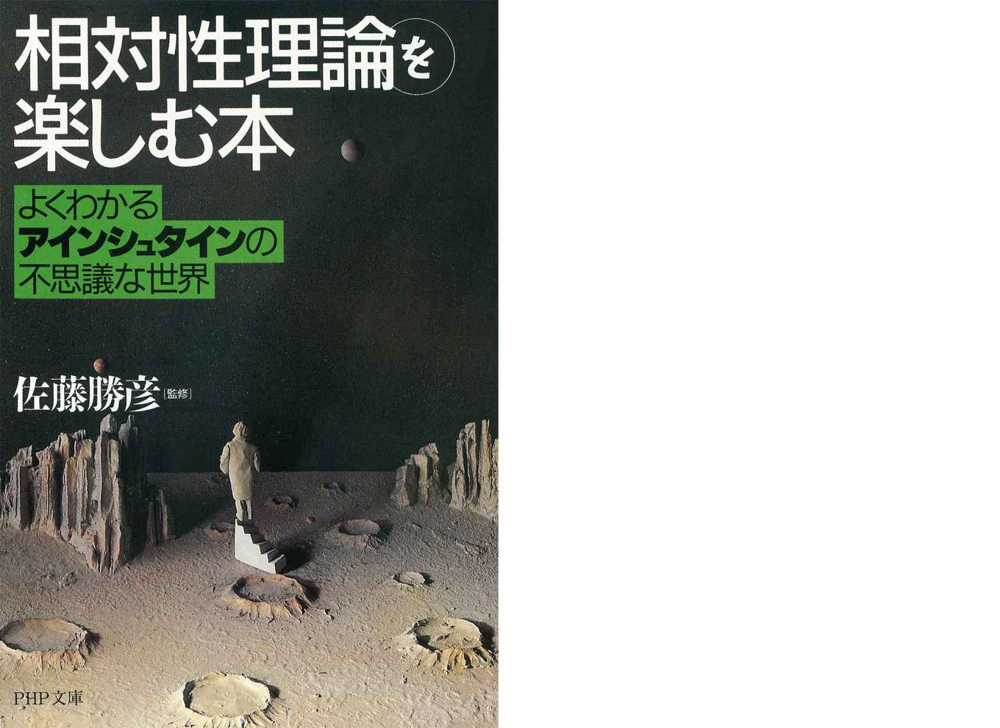
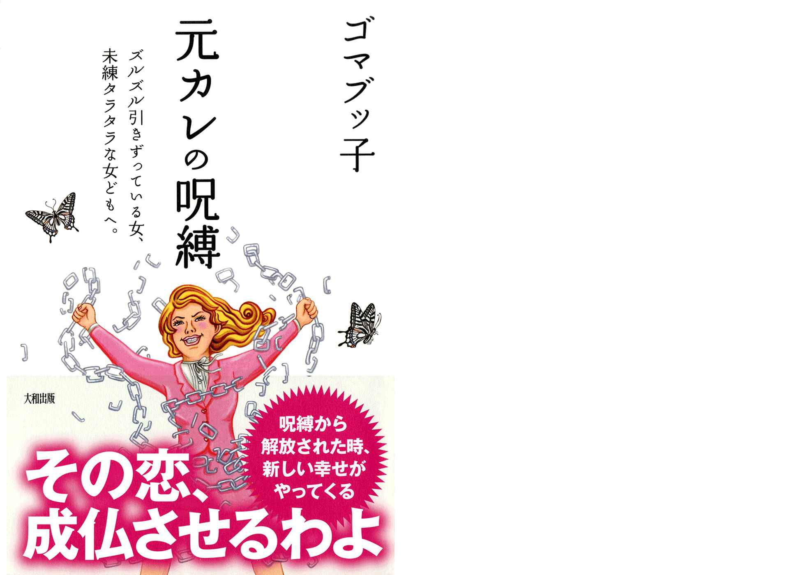

| PHP研究所電子書籍ベスト100 2015下半期 PHP電子 | |
| PHP研究所 | |
| 株式会社PHP研究所 (2015) | |
PHP研究所電子書籍ベスト100
2015下半期
PHP研究所 編
はじめに
この度は『PHP研究所電子書籍ベスト100 2015下半期』にご興味を持っていただき、誠に有難うございます。
さて、こちらの電子書籍は、2015年8月に発表した『PHP研究所電子書籍ベスト100 2015上半期』の続編となります。
「最新の情報がほしい」「もっと早く知りたい」というご要望にお応えする形で、PHP研究所における2015年下半期（2015年7月～11月）の電子書籍売上ベスト100をご紹介するものといたしました。
ご挨拶が遅くなりましたが、今回この電子書籍のご案内を担当させていただきます「い」と申します。私は入社して6年目に突入しましたが、電子事業部に来てからは、まだ二ヶ月程の新人です。
急に上司から担当に指名されましたので、何をお伝えしたら良いのか悩みましたが、皆様に偉そうにご説明できるようなことはございませんので、個人的な感想も含めて、これから発表いたしますベスト100タイトルについてざっくりとご紹介していきたいと思います。しばしの間お付き合いくださいませ。
「PHPと言えばビジネス書」と、出版業界の中ではよく言われておりますが、電子書籍のベストタイトルはかなり他ジャンルに及んでいて、バラエティ豊かです。
正直なところ、私も初めて集計してみましたが、とても驚きました。それもそのはず。弊社では、自社で出版した書籍はもちろんのこと、他の出版社様からお預かりした書籍も電子書籍化して発売しております。タイトルを見ていただければ、すぐにお分かりかと思います。
そのおかげで、ランキングを見ているだけで飽きない内容が取り揃えられているのです。元々本が好きな私も、わくわくする内容となりました。
ただし、それだけではもちろんありません。弊社の「強み」を活かしたタイトルや、ロングセラーで愛され続けるタイトル、電子書籍限定タイトルも、ベスト100の中には散りばめられております。
もちろん、今注目を集めているテーマを扱うタイトルもあります。そしてまた、「え、こんなものまで？」といったようなタイトルもたくさんあります。
個人的には、制作やプロモーションに関わってきたタイトルがベスト100にランクインしており、思わず声を出して喜んでしまいました。
私たち電子事業部では、皆様に一冊でも多くの電子書籍との出会いをお届けすべく、日々制作を続けております。
もちろん、制作だけではなく、販売やプロモーションについても同様です。その一つの形として、この『PHP研究所電子書籍ベスト100 2015下半期』も生まれました。
「どんな本を読もうかな」「何か読みたいな」そんな時にこちらの電子書籍を開いていただければ、きっと「これだ！」というタイトルが見つかると思います。ぜひとも、PHP研究所の2015年下半期（2015年7月～11月）電子書籍ランキングを通し、電子書籍選びの一助にしてください。そして興味を持たれた作品をご一読いただければうれしいかぎりです。
2015年12月8日 PHP研究所 電子事業部

【本電子書籍について】
○本電子書籍に掲載したランキングは2015年7月から2015年11月までのPHP研究所の全電子書籍販売ストアの売上を集計したものです。
○各ページ末の「電子書籍の詳細ページはこちら 」の「こちら 」の文字をタップまたはクリックすると、書籍の商品詳細ページに遷移します。
○本電子書籍中で一部、漢字が簡略体で表示される場合があります。
2015年 PHP研究所電子書籍
第1位
まだGHQの洗脳に縛られている日本人
ケント・ギルバート
2015年刊
GHQが広めた「日本のアジア侵略」という嘘は、もう結構。日本人よ、「サンドバッグ」になるな！ 知日派・米国人からの熱いエール。
「WGIPをご存知ですか？ あなたの歴史観は根本から間違っているかもしれません」と本書の帯で謳うのは、40年近く日本に住む米国人弁護士のケント・ギルバート氏だ。戦後占領期にGHQ（連合国軍総司令部）は、日本に施した「ウォー・ギルト・インフォメーション・プログラム（WGIP）」というマインド・コントロールによって日本人を徹底的に洗脳し、「愛国心」と「誇り」を奪った。それから約70年、日本人はその洗脳にいまだ縛られており、それに乗じて近年では中韓の反日工作が凄まじいが、それらがとんでもない捏造であり、悪質なプロパガンダにすぎないことを確信した著者は読者に、こう強く訴える。＜一方的な「嘘」や「プロパガンダ」に負けないでください。そして、今こそ日本人としての「愛国心」と「誇り」を取り戻してください。そのために必要な「知識」を学び、それを堂々と主張できる「勇気」を持ってください。全日本人、必読！
電子書籍の詳細ページはこちら
2015年 PHP研究所電子書籍
第2位
道をひらく
松下幸之助
1991年刊
運命を切りひらくために。日々を新鮮な心で迎えるために――。人生への深い洞察をもとに綴った短編随筆集。40年以上にわたって読み継がれる、発行450万部超のロングセラー。
昭和43年の発刊以来、累計400万部を超え、いまなお読み継がれる驚異のロングセラー『道をひらく』。本書は、松下幸之助が自分の体験と人生に対する深い洞察をもとに綴った短編随想集である。これまで、どれほど多くの人が本書に勇気づけられ、また成功への指針としてきたことか。この本には、時代を超えて生き続ける不変の真理があるからである。もし失敗して落ち込んでいるのならば、「自信を失ったときに」「困難にぶつかったときに」「運命を切りひらくために」の項が、きっと立ち直る勇気を与えてくれるだろう。もし、経営で行き詰まってしまったら、「仕事をより向上させるために」「事業をよりよく伸ばすために」「みずから決断を下すときに」の項が、解決の方途を示してくれるはずである。業の成功者であり、それ以上に人生の成功者である松下幸之助であればこそ、その言葉には千鈞の重みがある。あらゆる年代、職種の人に役立つ、永遠の座右の書である。
電子書籍の詳細ページはこちら
2015年 PHP研究所電子書籍
第3位
一生お金に困らない生き方
心屋仁之助
2015年刊
お金は、「労働の対価」ではなく、自分自身の「存在給」として受け取るもの。お金に対するイメージを変えて、豊かになる方法を紹介。
お金に対する思いって、なんかヤらしい。がめつい。品がない......。でも、ほしい。でも、あんまりほしがってるって知られたくない。でも、どうすればちゃんと「必要なお金が入ってくる人」になれるでしょうか？ 本書は、19年間会社員をやってきて、今はカウンセラーとして、自由と豊かさを得た著者がはじめて書いたお金の本。以前はお金に苦労したこともある著者が、ひょんなことから見つけた、「お金に困らなくなる方法」について書かれています。損をすれば、豊かさが返ってくる。お金も空気も愛情も、出せば回る。これが宇宙の法則です。お金をちゃんと使って、世の中にめぐらせる。自分が好きなものに使って、自分を喜ばせる。お金をケチらない。お金の流れを止めない...。気づいたら、頑張ってないのにお金がいっぱい入って、困らない人になっていた。そんな人になれるはずです。
電子書籍の詳細ページはこちら
2015年 PHP研究所電子書籍
第4位
東大生が書いた世界一やさしい株の教科書
東京大学株式投資クラブAgents
2011年刊
東大生が教えたら、難しい株式投資もこんなにわかりやすい！ 個性豊かな先生陣と、初心者生徒3人と一緒に、楽しく学べる株の教科書。
東大生が書いたら、難しい株式投資がここまでわかりやすくなりました！「株に興味はあるけど、入門書で挫折した」「文章が堅苦しくて読み進められない」......本書は、そんな人にオススメの株式投資入門講義です。これ以上ないくらいにやさしいこの本で、遊太くん、勤くん、彩ちゃんの3人の生徒と一緒に株を学んでいきましょう。教えてくれる先生方は、ちょっと陰のある金七先生、セクシーな紀香先生、筋肉マッチョな株レラ先生と、超個性派ぞろい。株の基礎からチャートの読み方、指標の使い方、株価に影響を与えるニュースの見方や新聞の読み方まで、必要な知識を楽しく身に付けることができます。さらに、リアルな銘柄選択、投資クイズなど、ずっと役立つ・使える情報が満載。この一冊を準備すれば、今日からあなたも個人投資家！
電子書籍の詳細ページはこちら
2015年 PHP研究所電子書籍
第5位
「好きなこと」だけして生きていく。
ガマンが人生を閉じ込める
心屋仁之助

2014年刊
「一番嫌なことをやってみる」「楽をするほどうまくいく」など、好きなことをしてお金も入ってくる方法を話題のカウンセラーが解説。
好きなことだけをして生きていく。「そんなことができたら幸せだなあ。でも、それができるのは、才能や能力がある人だけ。自分には無理」と思っていませんか？ でも、本当は誰でもその人にあった好きなことをして、もっと自由に生きることが可能なのです。もちろん、お金に困ることもありません。本書では、19年間会社員をやってきて、今はカウンセラーとして、自由と豊かさを得た著者が、誰もがその人なりに「好きなことだけをして生きていく」方法を紹介します。「"努力＝報われる"ではない」「人生は、本当は上りのエスカレーター」「好きなように生きることに罪悪感を感じる必要はない」「やりたくないことをやめる」「人に迷惑をかけたり、嫌われることを恐れない」「好きなことをして生きるためには、"一番嫌なあること"をする」など、実践できる具体的な方法がつまっています。あなたも、ガマンがいっぱいの人生から解放されませんか？
電子書籍の詳細ページはこちら
2015年 PHP研究所電子書籍
第6位
自分を受け入れた瞬間、何かが起こる！「引き寄せスパイラル」の法則（大和出版）
奥平亜美衣
2014年刊
ベストセラー『「引き寄せ」の教科書』のカリスマブロガーが、「あること」をするだけで、次々と願いごとが叶ってしまう仕組みを初公開！
「信じられないほど道が開けた！」という声続々。ベストセラー『「引き寄せ」の教科書』のカリスマブロガー。「現状に不満をもちだながらもどこかであきらめてしまっている」「いいことがなければ幸せになれないと思っている」といった人。また、「一生ものの幸せと豊かさを手に入れたい」といった願いを持っているものの、なかなか現実ではそうならない人は多い。しかし、「引き寄せスパイラル」の状態に入ると、頭で思い描いた望みが、難なく、次々と叶うようになっていく――。そこで、本書では、これまで語られてこなかった、本当の「引き寄せ」。その驚くべき仕組みと方法を初公開。すでに「引き寄せ」を知っている方も、知らない方も、本書をお読みいただき、ぜひ、この素晴らしい世界を体感してください。
電子書籍の詳細ページはこちら
2015年 PHP研究所電子書籍
第7位
「話す」「書く」「聞く」能力が仕事を変える！伝える力
池上彰
2007年刊
わかっているつもり、では伝わりません。伝えるために話すこと、書くこと、聞くことを徹底して考えたジャーナリストの究極の方法とは？
商談や会議、プレゼンテーションや企画書・報告書の作成、電話での交渉、メールでの連絡――ビジネスの現場で行なわれている日常業務。仕事の「できる」「できない」を左右するのは、意外とこうした基礎をしっかりやるかどうか。それには上司や部下、顧客とのコミュニケーションをいかに円滑にするかが鍵を握る。本書は「話す」「書く」「聞く」の3つの能力の磨き方を紹介。これができると自ずと成績・業績に結びつくもの。長年NHKの『週刊こどもニュース』のお父さん役を務めてきた著者（現在はフリージャーナリストとして独立）ならではの極意を伝授する。伝えることの難しさを身をもって経験しているだけに、ビジネスの現場でも十分応用が効く智恵が盛りだくさんである。相手を惹きつける、ビジネス文書を書く、文章力をアップさせるなど、本書の秘訣を習得すれば、仕事が楽しく、やりやすくなること間違いなしだ。
電子書籍の詳細ページはこちら
2015年 PHP研究所電子書籍
第8位
ある日突然40億円の借金を背負う――それでも人生はなんとかなる。
湯澤剛
2015年刊
突然の父の死。息子の私に遺されたのは40億円の負債だった。「完済に80年かかる」と言われた日から、負債がなくなるまでの奮闘記。
本書は、ビジネスノンフィクションです。著者の湯澤氏は、人も羨むようなエリートサラリーマンだったにもかかわらず、父の急逝により、家業と莫大な借金を受け継ぐことになりました。その額、40億円。継いだ企業は「会社」と呼べないほどの崩壊状態、家にも督促の電話がかかってくる日々でした。やっと調子が上向いたと思えば、店の火事、ベテラン社員の死、食中毒事件と、驚くべき不運が続きます。しかし湯澤氏は、何度倒れても立ち上がるボクサーのようにKO寸前でよみがえり、ついには「80年かかる」といわれた返済を目前に控えるまでにこぎつけました。人生、いつ、何があるかわかりません。今どんなに"のっている"人も、今どれほど追い詰められている人も、湯澤さんの数奇な体験に胸が熱くなり、勇気をもらうことでしょう。机上の空論や飾り言葉ではない、真の「経営論」「人生論」がここにあります。
電子書籍の詳細ページはこちら
2015年 PHP研究所電子書籍
第9位
実力派たちの成長戦略
30代、40代は「ビジョナリー・プロフェッショナル」となれ！
山本真司
2015年刊
部下を育て、自分も成長するための「差別化戦略」とは何か。プレイングマネジャーたちに贈る、これから10年の働き方の指針。
会社からの過大な要求、疲弊していくメンバー、成長できない自分......。大変動の時代を生きるプレイングマネジャーたちに贈る新しい働き方の指針。一流のビジネス・パーソンは、働きたくなるまで徹底的に休む？ レゾナンス思考がすべてを変える！ GEのファースト・ワークスとは？ 「空想家」「頑固職人」と「ビジョナリー・プロフェッショナル」との違い。差別化の要諦は「まだ人気のないもの」と「好きなこと」。ミドルの症例診断と処方箋――「原因他人批判症」「プロ意識過剰症」「現実認知拒否症」。MBAホルダーに負けない「100分で学ぶ経営戦略論の基礎『5講』」etc.10年の時を経て、名著『30歳からの成長戦略』が大幅に加筆修正のうえ、再び登場。疲れない、ピンチに強い、部下も自分も成長できる！ ビジョナリー・プロフェッショナル（実力派創造者）だけが知っている究極の働き方を1冊に。
電子書籍の詳細ページはこちら
2015年 PHP研究所電子書籍
第10位
驚くほど話せるようになる！英会話「1日1パターン」レッスン
デイビッド・セイン

2011年刊
英語で暗記すべきは単語ではなく「文型＝パターン」！ これさえ覚えれば大抵のことは英語で表現できるようになるという50文型を厳選紹介！
英語が話せるようになるには、何百、何千という単語・フレーズを覚えなければいけない......そんなふうに思っていませんか？ 実はもっと手っ取り早い方法があるのです。それが、「活用範囲の広い基本パターン（文型）の使い回し」です。たとえば、Ｉ'd like ～（～が欲しいのですが）というパターンを一つ覚えるだけで、Ｉ'd like a menu＝メニューをくださいＩ'd like fish＝（機内食で魚か肉か聞かれたときに）魚料理でお願いしますＩ'd like a discount＝割引をしてほしいのですがといったように、何通りもの表現ができるようになります。本書では、実際にネイティブが日常会話でよく使う、使い勝手のいい「頻出パターン」を著者が厳選紹介（しかもすべて中学英語レベル）。そのため、収録パターン数は50と決して多くありませんが、これだけでもかなりのことを英語で言えるようになります。さらに、「反射的にパッと口から出てくる」ようにするためのトレーニングも収録。これ1冊で、「中学で習った英語」が「とっさに使える英語」に変わること間違いなし！
電子書籍の詳細ページはこちら
2015年 PHP研究所電子書籍
第11位
モテ理論
5日間で女心をつかむ超恋愛テクニック
植草美幸
2015年刊
「女を見たら、姫と思って扱え！」「過去の女性の話は絶対にNG」など、カリスマ婚活アドバイザーが、モテる男に変身する奥義を伝授！
石田純一さん、推薦！ 「たくさん声をかけてみたらいい。恋はある意味、確率だから――」モテる男とモテない男を分けるものは、一体何か？ 本書では、「どんな人でもモテる男に変わることはできる！」と説くカリスマ婚活アドバイザーが、その奥義をあますところなく伝授。「自分の中にイタリア男を住ませなさい」「『いまの仕草かわいい。もう一度やって！』は女がときめく魔法の言葉」など、即使えて効果抜群のノウハウが満載です。一瞬で、モテ期がやってくる1冊！ 「『出会いがない』『好みの人がいない』なんて嘆いているヒマがあったら、周りの女性、すべてと恋愛するつもりで見てみたらどうでしょう。そんな目をもって1日を過ごしてみたら、ほら、出会いなんて、そこらじゅうに転がっているでしょう？ もちろん実際に口説くとなったらテクニックが必要ですが、その点はご安心を。これからみっちり、指南させていただきますからね」（本書より抜粋）
電子書籍の詳細ページはこちら
2015年 PHP研究所電子書籍
第12位
小さなことに左右されない「本当の自信」を手に入れる９つのステップ（大和出版）
水島広子
2013年刊
あなたに贈る、水島式「自己肯定感」の高め方。不思議と「何があっても、大丈夫」と思えてくる！
「何をやっても満たされない」「ダメな自分がイヤ」「他人の目が気になる」「すぐに凹んでしまう」「いつもあきらめてしまう」......そんなあなたに贈る、水島式「自己肯定感」の高め方。「大事なのは『ＤＯの自信』ではなく、『ＢＥの自信』をつけること」「『するべき』ではなく『したい』で動く」「『自信』を失わない人づき合いをする」――対人関係療法の精神科医が、どんなときにも折れない「本当の自信」を手に入れる方法を、様々な例を扱いながら丁寧に解説。不思議と「何があっても、大丈夫」と思えてくる！（著者紹介）精神科医、元衆議院議員。対人関係療法専門クリニック院長アティテューディナル・ヒーリング・ジャパン(AHJ)代表「対人関係療法」の日本における第一人者。『「怒り」がスーッと消える本』『身近な人の「攻撃」がスーッとなくなる本』（大和出版）、『女子の人間関係』（サンクチュアリ出版）など著書多数。
電子書籍の詳細ページはこちら
2015年 PHP研究所電子書籍
第13位
海外経験ゼロでも仕事が忙しくても「英語は1年」でマスターできる
三木雄信
2014年刊
TOEIC500点レベルから、わずか1年で買収交渉ができるまでに急成長！ 元ソフトバンク社長室長が、最短最速の英語勉強法を伝授！
学生時代、英会話が大の苦手だったという著者。ところが、ソフトバンクに転職するやいなや、孫正義社長の秘書として海外出張への同行を命じられ、そこで英語ができないことがものの見事に露呈してしまう。唖然とする孫社長の表情を見て、「このままではクビになる」と感じた著者は一念発起し、「流暢に話せるわけではないのに、ネイティブとの交渉で絶対負けない」孫社長の英語を参考に勉強をスタート。その後、仕事に必要な英語だけを集中的に学習する独自のやり方で、「通訳なしで交渉ができるレベル」の英語をわずか１年でマスターした（しかも、孫正義社長の下で忙しく働きながら）。本書では、自らの実体験をもとに編み出した「最短最速の英語勉強法」を開陳。著者の勉強法は、一見ユニークだが、誰もが実践できるもの。英語学習に対する「不安」が「希望」に変わる１冊。
電子書籍の詳細ページはこちら
2015年 PHP研究所電子書籍
第14位
「対人関係療法」の精神科医が教える「怒り」がスーッと消える本（大和出版）
水島広子
2011年刊
「イライラしたくない」「怒りっぽい自分を変えたい」...。怒っている人は「困っている人」、うるさいアドバイスは「相手の悲鳴」、ケンカするのは「役割期待」がずれただけ。
「ムカムカを手放したい」「ついキレてしまう」「つまらないことでイライラしたくない」「怒りっぽい自分をなんとかしたい」あなたへ。 「怒り」はなぜ起きるのか。どうすれば、イライラを手放せるのか。感情に振り回されない人になるには、どうすればいいのか。対人関係療法の第一人者が、「怒り」のメカニズムとその対処法を初公開します。 「怒り」の原因は３種類ある、怒っている人は単に「困っている人」、うるさいアドバイスは「相手の悲鳴」、ケンカするのは「役割期待」がずれただけ......。 わかりにくい感情のカラクリをすっきり明快に解説し、今すぐ心が晴れるヒント満載です。 「イラストもかわいくて、バツグンにわかりやすいです！」「具体的な方法がとても役に立ちました」「何度も読んで、バイブルにしています」......喜びの声続々。アンガーマネジメント本の決定版！
電子書籍の詳細ページはこちら
2015年 PHP研究所電子書籍
第15位
アメリカの戦争責任
戦後最大のタブーに挑む
竹田恒泰
2015年刊
戦後70年を迎えるなかで、絶対に語られなかった「戦争責任」がある。気鋭の作家が最大のタブーに挑み、新しい日本の展望を切り拓く。
「本書はいつか通らなければならない道をあえて今、歩いてみようという試みをするものである」。戦後70年を経るなかで、これまで日本では数々の「戦争責任」が語られてきた。だが、そこで絶対的なタブーとして誰もが目を背けてきたテーマがある。それが、原爆投下の正当性に疑問を投げかける「アメリカの戦争責任」だ。そして、少しでもその問題に触れようとした人たちは、社会的に抹殺されてきた。しかし、その問題を直視することなくして、戦後の本質と真の平和を語ることはできない、と竹田氏は言う。なぜ、日米ともに原爆投下の正当性を疑うことは、タブーとされているのか。アメリカの教科書は原爆について、いかにそれを正当化し、子供たちに伝えているのか。そうした現状を踏まえながら著者は歴史を遡り、トルーマン大統領の目的が「原爆投下で日本を降伏させる」から「原爆投下まで日本を降伏させない」にすり替わった恐るべき史実を描き出していく。「ポツダム宣言」に仕掛けられた「日本が絶対に降伏できないような工作」とは、何だったのか。原爆を落とすのが先か、それともソ連参戦が先か......。終戦直前のドラマを知れば知るほど「原爆を落とすことで早く戦争を終わらせる」という「早期終戦・人命節約論」が、欺瞞に満ちたものかがわかるだろう。そうした「原爆神話」から目覚め、両国が先の大戦を反省してこそ、真の日米友好が築けるはず。気鋭の作家が自らの身を顧みることなく、戦後最大のタブーに挑んだ問題作。
電子書籍の詳細ページはこちら
2015年 PHP研究所電子書籍
第16位
"収納のチカラ"で快適な部屋に！おうちデトックス（大和出版）
大橋わか
2015年刊
テレビ、雑誌で大評判！予約３ヶ月待ちの人気アドバイザーが明かす「部屋の見せ方」「モノの置き方・しまい方」
「部屋が片付けられない」「雑誌を見ても同じようにできない」「すぐにリバウンドしてしまう」「収納グッズばかりが増え、ますますモノが溢れている」というあなたへ、ピッタリの方法があります。それが「おうちデトックス」。難しいことは何一つありません。持っているモノが高価でなくても、家が賃貸でも、古かったとしても大丈夫。「おうちデトックス」を知るだけで、あなたの家は心地いい空間に変わります。実際、「おうちデトックス」をはじめた方からも、「部屋がいつも片付いているので、掃除機をかけるのが好きになった」「快適な部屋になったので引っ越したくない」など、喜びの声が続々と届いています。クローゼットから、キッチン、リビングダイニング、そして玄関まで――。この本では、「明日だけではなく1年後も3年後もますますキレイで、思わず人を呼びたくなる部屋づくり」の知恵とアイデアの数々をすべて明かします。
電子書籍の詳細ページはこちら
2015年 PHP研究所電子書籍
第17位
文系の壁
理系の対話で人間社会をとらえ直す
養老孟司
2015年刊
本当の理系思考とは「前提を問う力」だ――。森博嗣（工学）、藤井直敬（脳科学）、鈴木健（複雑系）、須田桃子（新聞記者）と共に考える。
「理系は言葉ではなく、論理で通じ合う」「他者の認識を実体験する技術で、人間の認知は進化する。」「細胞や脳のしくみから政治経済を考える」「STAP細胞研究は生物学ではない」......。解剖学者養老孟司が、言葉、現実、社会、科学研究において、多くの文系の意識外にあるような概念を、理系の知性と語り合う。『すべてがFになる』などの小説で知られる工学博士森博嗣、手軽にバーチャルリアリティが体験できるデバイス（段ボール製）を考案した脳科学者藤井直敬、話題作『なめらかな社会とその敵』の著者で、「スマートニュース」の運営者でもある鈴木健、『捏造の科学者 STAP細胞事件』で大宅壮一ノンフィクション賞を受賞した毎日新聞記者・須田桃子。「前提」を揺さぶる思考を生む四つの議論。
電子書籍の詳細ページはこちら
2015年 PHP研究所電子書籍
第18位
"独り身"の呪い（大和出版）
男をドン引きさせてしまうのにはワケがある！
ゴマブッ子
2014年刊
一生幸せになんかなれないわ! なんだかんだ言ってやっぱり結婚したいあんたたちへ、今すぐ呪いを解く魔法を教えます。
「こいつ、めんどくさい」「もう、一緒にいるのに疲れた」...お言葉ですが、こんなふうに思われる女のままでは、一生幸せになんかなれないわ! なんだかんだ言ってやっぱり結婚したいあんたたちへ。「モテないゲイ日本代表」のゴマブッ子と「元・負け犬の教祖」のT子が捧げる、最強最高の恋愛指南書。
電子書籍の詳細ページはこちら
2015年 PHP研究所電子書籍
第19位
「アジアインフラ投資銀行」の凄惨な末路
中国の野望はかくて潰える
宮崎正弘
2015年刊
注目が集まる「アジアインフラ投資銀行」。だが、中国は深刻な事情を隠している！ 誤謬ばかりの報道に騙されぬために必読の緊急発刊！
「アジアインフラ投資銀行（AIIB）」が大きな話題になっている。欧州勢が大挙して参加を表明、57カ国が設立メンバーとして加盟することになったからである。この状況下、日本でも、経済界を中心に「参加しないと、商機を失う」「バスに乗り遅れるな」との大合唱が巻き起こった。だが、何かがおかしくないか？ 本書ではAIIBの華やかなニュースの裏側に隠された中国の真実に肉薄していく。何より、あるはずの中国のカネはあらかた海外へ持ち出され、外貨準備は底をついている。人民元の暴落もまもなく始まりかねない。参加を表明した国々の思惑もバラバラ。さらに、米国の対中政策は「戦略的パートナー」から「仮想敵国」へ移りつつあり、親中派すら中国を罵倒しはじめている。しかも、ニカラグア運河など海外大プロジェクトはいずれも失敗の瀬戸際。「集金兵」こと習近平は、国内の凄惨な権力闘争に明け暮れて、今や暗殺と軍事クーデターを本気で懼れている。この先には、とてつもない破局があるのみではないのか。誤ったメディア報道に踊らされ、目先の利益に目が眩んで右往左往するすべての日本人に驚愕の真実を伝える警告の書。
電子書籍の詳細ページはこちら
2015年 PHP研究所電子書籍
第20位
3000億円の事業を生み出す「ビジネスプロデュース」戦略
なぜ、御社の新規事業は大きくならないのか？
三宅孝之、島崎崇
2015年刊
日本企業が「世界を制する事業」を生み出すには？ 「業種を超えた連携による巨大事業の創造＝ビジネスプロデュース」の実現方法を指南！
日本企業から「世界を制するビッグビジネス」が生まれなくなって久しい。実際、「既存事業がジリ貧なので新しいことを始めないとまずい、なのに始められない。始めても大きく育たない......」という話はよく耳にする。そうしたなか、株式会社ドリームインキュベータは、この10年近く、事業創造型のプロジェクトを多数手掛けてきた。その中でつかんだ「ビジネスプロデュース」という方法論を、はじめて明らかにしたのが本書である。ビジネスプロデュースとは、「社会的課題を取り込み、それを解決する形での構想を描き、その実現に向けた仲間づくりをして連携していく。それによって数百億、数千億円規模の事業を創出していく」というものである。本書では、その進め方、注意点を五つのステップ（構想、戦略、連携、ルールづくり、実行）に分けて解説。さらに、ビジネスプロデュースを疑似体験できる、大手ハウスメーカーの経営企画室長を主人公にした架空ストーリーも収録した。冒頭のような課題を抱えている経営幹部・ミドル層は特に必読。
電子書籍の詳細ページはこちら
2015年 PHP研究所電子書籍
第21位
40歳からのモテる技術
青木一郎
2015年刊
20～30代の女性の7割にとって40歳以上は恋愛対象。見た目、しぐさ、会話術まで、中年からモテ男になれる究極のコツを直伝する！
800人の中年男性に恋人を作らせたIBM出身の恋愛コンサルタントが直伝。おじさん臭い外見を一新する逆転のセオリー。中年男性が無理なく会話力をアップさせる方法。出会いを量産する「価値観×ネット」戦略。
電子書籍の詳細ページはこちら
2015年 PHP研究所電子書籍
第22位
他人を攻撃せずにはいられない人
片田珠美
2013年刊
罵声を浴びせる人から、「いい人の仮面」を被り、密かに相手を陥れる人までさまざまなケースをとりあげ、その心理を精神科医が分析する。
暴言を吐く、支配したがる、けなして自信を失わせる、優しいようで水面下で工作している、一見目立たない人を含めて、あなたの周りにはとんでもない人が隠れているかもしれない。本書では、精神科医として「ターゲット」にされて、痛い目に遭った患者たちから聞いた、人を陥れる「攻撃欲の強い人」を事例で紹介。ターゲットの心をどんなふうに壊していくのか、その手法を取り上げて分析する。「攻撃欲の強い人」とはどんな人か。多くの場合、攻撃される側は、ターゲットが抵抗できないが、それは一体なぜなのか。何のためにそんなことをするのか。結果どんな影響を及ぼすのか。はたして、攻撃欲の強い人と、どう向き合い対処すべきか。本書で明らかにする。自分のために、人生を台無しにされないために――職場や家族に潜む「害になる人」の精神構造を知る！
電子書籍の詳細ページはこちら
2015年 PHP研究所電子書籍
第23位
すべての組織は変えられる
好調な企業はなぜ「ヒト」に投資するのか
麻野耕司
2015年刊
成長企業が競って「ヒト」に注力しはじめた。気鋭の組織人事コンサルタントが語る新しい組織論とリーダーの仕事。
「職場の変革において、彼の右に出る者はいない」――リンクアンドモチベーショングループ代表 小笹芳央「このメソッドと出会えたことで、私の会社は復活した」――株式会社ネットプライス代表取締役社長 小谷北斗サービスや商品の内容だけでは消耗戦に終止符を打つことのできない時代がやってきた。多くのリーダーが忘れがちなのは、この課題に対する根本策が「ヒト」への投資であるということだ。今、好調な企業はこぞって「ヒト」重視の施策を実施している。ある会社ではリーダーの声掛けを変え、ある組織では会議のやり方を変えた。組織改革の雄、リンクアンドモチベーションの気鋭のコンサルタントが明かす、組織をよみがえらせる7つの処方箋。
電子書籍の詳細ページはこちら
2015年 PHP研究所電子書籍
第24位
ムリめの彼・気のない彼・愛が冷めた彼大好きな人が振り向いてくれる本（大和出版）
ANNA
2009年刊
「私はあなたが好き、一人でいても楽しくて幸せ」悩める女性たちを救ってきたセラピストが明かす、読むだけで"愛され体質"に変わる方法。
あなたの恋がうまくいく魔法の言葉があります。それは......「私はあなたが好き。 私は一人でいても楽しくて幸せ」この言葉のすごい魔力、本書を読めばわかります。「彼とうまくいかない原因がわかった！」「自分と彼との関係が好転した」「プロポーズされました！」など、恋に悩む多くの女性たちを救ってきたカリスマセラピストが明かす、読むだけで"愛され体質"に変わる方法。本文では、「ターゲットは彼」でも「人気モノ」になる心の溶かし方、「聡明」でも「ちょっとヌケてる」空気のつくりかた、「緊張でドキドキ」でも「最高のあなた」を演出する会話、「したいことをやる」でも「彼に尽くされる方法」など、女性が本当に知りたかった内容が満載。この一冊を読めば、彼の「ＮＯ」が「ＹＥＳ」に変わる日も、もう近い！
電子書籍の詳細ページはこちら
2015年 PHP研究所電子書籍
第25位
「食べない」健康法
石原結實
2012年刊
「食べないと健康に悪い」はもう古い！ いまは「食べないから健康」が常識。医師やスポーツ選手が実践する超少食健康生活を紹介する。
現代人の食べすぎが病気を増やしている！ ガン、脳梗塞、心筋梗塞、糖尿病、通風などの病気は、1日2食以下の「少食生活」で改善できる。本書は、断食が体に良い根拠から、その具体的な実践法、「飲酒はOK？」「いつまで続けるべき？」などの素朴な疑問までを解説。永年、断食指導を行なってきた著者が明かす「少食健康本」の集大成。「健康のために」と1日3回食べている方は必読！石原式「健康食」（朝）下記のどれか○食べない。○お茶に梅干し。○黒砂糖入り生姜紅茶1～2杯。○人参･リンゴジュース1～2杯。○生姜紅茶1～2杯と人参・リンゴジュース1～2杯。（昼）下記のどれか○ネギと七味唐辛子をしっかりふりかけたそば（とろろ、ワカメ、ざる）。○ネギと七味唐辛子をしっかりふりかけた具だくさんのうどん。○タバスコをふりかけたピザやパスタ。・○ごはんや弁当ならよくかみ、腹八分以下に。（夕）○アルコールを含め、何を食べても可。
電子書籍の詳細ページはこちら
2015年 PHP研究所電子書籍
第26位
［決定版］菜根譚
守屋洋
2007年刊
単行本・文庫合わせて30万部ロングセラーとなった、人生修養の書『新釈 菜根譚』の完全版。著者のライフワーク、ここに結実。
「菜根譚」は、人生の書である。著者は明の人、洪自誠。人たるの道を説く儒教、のんびり自足する思想を説く道教、悩める心の救済となる禅。この三つの教えが渾然一体となった、不思議な魅力をたたえた古典である。そしてなぜか、「菜根譚」は中国よりも日本で人気が高い。まさに、日本人が心に刻むべき「処世の道」がここにあると言える。「人に道を譲ることこそ、もっとも安全な世渡りの極意」「至るところに人生の楽しみはある。邸宅でもあばら屋でもその点は変わらない」「華美は淡白に及ばない」「風流は世俗のなかにある」......。そんな菜根譚の邦訳の代表作『新釈 菜根譚』が世に出たのは1982年のこと。守屋洋による心に響く口語訳が施された本書は、単行本・文庫あわせて30万部のロングセラーとなった。そして四半世紀を経て、語釈が加わり各条に解説がついた「決定版」が完成した。守屋洋のライフワークは、ここに結実した。
電子書籍の詳細ページはこちら
2015年 PHP研究所電子書籍
第27位
「脆弱なマネジメント」と「暴走する現場」の失敗の法則高学歴社員が組織を滅ぼす
「脆弱なマネジメント」と「暴走する現場」の失敗の法則
上念司
2015年刊
「こんなこと、あるある」と笑って読むうちに、やがて背筋が寒くなる事例を数多く紹介。日本の組織が失敗に陥る根本原因を描き尽くす！
どうして「優秀」と呼ばれる社員、「高学歴」社員が、組織をダメにし、会社を潰してしまうのか？ 著者は、そのような組織を滅ぼす「高学歴社員」の特長を、次のように喝破する。何も考えず、ただひたすら「対昨年比」で無理な計画を要求するので、現場が疲弊の極みとなる。半人前の管理職を量産するだけの人事ローテーションで、利益を生み出せぬ「情報弱者」の経営陣ばかり育て上げる。成果主義の誤ったインセンティブ設計で、モラルダウンと不正ばかりが横行する。本来、日本の「現場」は優秀なのに、あまりに「脆弱なマネジメント」にブチ切れて、やがて反乱へと至る......。「あるある」と笑いつつ、やがて背筋が寒くなり、目からウロコが落ちて、そして最後に勇気が湧いてくる「最強の組織論」！
電子書籍の詳細ページはこちら
2015年 PHP研究所電子書籍
第28位
伝わる・揺さぶる！ 文章を書く
山田ズーニー
2001年刊
仕事で受験で恋愛で。小論文指導のエキスパートが、想いを伝え、相手を動かし、望んだ結果を出すための、本当に役立つ文章術を伝授。
お願い、お詫び、議事録など、私たちは日々、文章を書いている。どんな小さなメモにも、そこには読み手がいて、目指す結果がある。ではそのような場面で、どうしたら誤解されずに自分の思いを伝え、読み手の気持ちを動かすことができるのだろう？著者は長年、高校生の小論文指導に携わり、現在は糸井重里氏のサイト『ほぼ日刊イトイ新聞』で「大人のための小論文教室」を連載し人気を博している。本書では「意見」「望む結果」「論点」「読み手」「自分の立場」「論拠」「根本思想」の七つの視点から、よい文章を書くための戦略をアドバイス。「自分の意見が見つからないときは、小さな問いを立ててみる」「テーマと論点の違いを意識する」などのユニークなノウハウを、具体的な文例を紹介しながら、解説していく。単なる文章のテクニックをこえ、自分の頭で考え他者と関わることの痛みと歓びを問いかける、コミュニケーションの本質に迫る一冊である。
電子書籍の詳細ページはこちら
2015年 PHP研究所電子書籍
第29位
保育士おとーちゃんの「叱らなくていい子育て」
須賀義一
2015年刊
お母さんたちに大人気のブログ『保育士おとーちゃんの育児日記』の著者が、子育てを単純に、楽しく変えるための具体的な方法を紹介。
「どんな育児書より一番役立つ」と、子育てに悩むパパとママが絶賛！毎月30万以上読まれる大人気ブログが電子書籍化です！子育てで悩まない人は、まずいないでしょう。一生懸命に子どもと向き合い、子どものためを思って叱っているのに、なかなかうまくいかない、子どもが言うことを聞いてくれない......。でも、そんな悩みを解消する方法があります！本書は、こどもが「叱られる行動」をとるメカニズムを解明しつつ、子どもが積み木を投げてしまうようなとき、友だちのおもちゃをとってしまう時など、さまざまなケースを取り上げ、すぐに使えるヒントをたくさん紹介してみました。親も子もみんなが幸せになれる「叱らなくていい子育て」、始めてみませんか？
電子書籍の詳細ページはこちら
2015年 PHP研究所電子書籍
第30位
体脂肪を落とす・締まったカラダをつくる効く筋トレ・効かない筋トレ
石井直方/荒川裕志
2011年刊
身体を本気で鍛えたい人のバイブル。マシンの基本と応用の使い方、筋肉の徹底的な追い込み方など、類書にはない実践的な情報が満載。
初心者から中･上級者まで、圧倒的な情報量で満足の、筋トレバイブルの決定版。筋トレには、トレーニングの効果を最大限引き出すための"効かせる""追い込む"応用テクニックがあります。見よう見まねのフォームで好きなメニューだけをこなすのと、ポイントを押さえて目的にあわせたメニューで鍛えるのとでは、トレーニングの効果に大きな差が出ます。本書には、普通の教本では載っていない、トップ選手・上級者だけが知るコツをたくさん紹介しています。本書は、筋トレ種目を部位別に「自宅編」「ジムマシン編」「ジムフリーウエイト編」に分けて、写真をふんだんに使ってポイントを丁寧にまとめました。紹介する種目数は、バリエーション種目を含めて100種類以上。初心者の方はもちろん、上級者や指導者の方も、メニューの組み立てやフォームのチェックに必ず役立つ1冊です。
電子書籍の詳細ページはこちら
2015年 PHP研究所電子書籍
第31位
銀座Ｎo．１ホステス＆心理カウンセラーが教えるモテようとしなくてもモテる女になれる本（大和出版）
水希
2010年刊
不器用な女性たちの自信の持ち方から、雰囲気・行動・会話で彼をリラックスさせる秘訣までを大公開します。
人見知り、引っ込み思案、気が利かない......そんな私でも愛されるようになりました！モテたい！愛されたい！ けど、そのために男性に媚びたりするのは嫌だし、私には絶対無理。そもそも、人見知りだし、気が利かないし......。そんな不器用な女性だって、雰囲気・行動・会話のスキルをちょっと磨くだけで、自然と愛される人になれる！うつ発症のどん底状態から、一躍、銀座Ｎｏ．１ホステス、心理カウンセラーになった著者だからこそ話せる、無理なく幸せになれるコツをぜーんぶ教えます
電子書籍の詳細ページはこちら
2015年 PHP研究所電子書籍
第32位
日本人の働き方の9割がヤバい件について
谷本真由美
2015年刊
カイシャは、もう守ってくれない。生き残りたければ、自分商店を開け！ 海外の事例をもとに来るべき時代に備える働き方を提言。
なぜ日本人は、こんなに働き方で悩むのか？ 日本人は悩む理由を「自分」がダメだから......と思いがちです。しかし、本当は、「自分」がダメな理由、仕事で悩む理由は、今の自分が置かれた状況を作っている人や、それを支える「仕組み」が悪いからなのです。そんなおかしい日本の「働く仕組み」に気づかず、毎日がむしゃらに働いている人が多すぎるのが、日本の問題です。その日本の働く仕組みのどこがおかしいのか？ 激変する世界情勢の中で、食べていくために、何をするべきか？ ツイッター上、May_Roma（メイロマ）の名前で多くのフォロワーから愛されている、元国連職員でイギリス在住の著者が、海外の働き方の事例や最新の情報をもとに、来るべき時代に備える働き方を提言します。「カイシャ」は、もうあなたを守ってくれません。生き残りたければ、スキルを磨いて「自分商店」を開かなければならないのです！
電子書籍の詳細ページはこちら
2015年 PHP研究所電子書籍
第33位
"内向型"のための雑談術（大和出版）
自分にムリせずラクに話せる５１のルール
渡瀬謙
2010年刊
自他共に認める超内向型人間がつかんだ「自分にムリをしないでラクに会話を進める技術」を初公開。
「せめて３分間でいいから雑談を続けたい」というあなたへ。・初対面の人と何をしゃべっていいのかわからないために、なかなか打ち解けられない。・だれかと一緒にいると、沈黙をやぶる言葉が出てこなくて、いつも重苦しい空気になる。・大勢の人が集まるパーティや飲み会の席などでは、たいてい孤立してしまう。......こんな悩みを抱えたまま、売れないセールスマンの烙印をおされた著者が、試行錯誤の結果生み出した"超内向型人間"でも「ほんの５分、せめて３分でいいから人と気楽に話せるようになる」ための「雑談術」。苦手な会話、人づきあいがウソみたいにラクになります！
電子書籍の詳細ページはこちら
2015年 PHP研究所電子書籍
第34位
斎藤一人 大富豪が教えてくれた本当に豊かになれる「大金持ちごっこ」（KKロングセラーズ）
みっちゃん先生
2011年刊
生涯納税額日本一の大実業家、斎藤一人さんが教える誰でもお金持ちになれちゃう『楽しいゲーム』。どんなに貧しい人だって、もう貧乏には戻れない!!
「大金持ちごっこ」。これは、生涯納税額日本一の大実業家、斎藤一人さんが、お弟子さんのみっちゃん先生に教えた「楽しいゲーム」です。かつて、みっちゃん先生はOLで、限られたお給料を、節約しながらやりくりしていました。そのころ、ひとりさんがこんなことを言ったのです。「みっちゃん、誰でも自然とお金持ちになれちゃう『楽しいゲーム』があるんだよ。これをやると、どんなに貧しい人だって、もう貧乏には戻れない（笑）誰でも、『豊かで幸せな成功の波動』になっちゃうんだよ。どうだい、みっちゃん、このゲームを今日からやってみないかい？」。そのゲームが「大金持ちごっこ」です。このゲームをするのに、1円もかかりません。そして、ゲームをすることで、毎日がワクワク楽しくなります。それだけで、あなたの人生は成功したことになります。さらに、経済的に豊かになったり、仕事で出世できたら、大成功ですよね。ですから、このゲームをいつもやっていれば、あなたの人生は「成功」か「大成功」しかないのです!! また、本の後半では、ひとりさんから教わった、「人とお金に愛される魔法の習慣」もご紹介しています。「お金を払うときは、『ありがとう』と言おう」「売れている人は、みんな『愛ある押し出し』をやっている」「プリンセスのようにふるまうと、『プリンセスにふさわしいこと』が起こる」...などなど、この本を読めば、ひとりさんの「お金の教え」がしっかりわかります。思わず笑いが吹き出してしまうような、ひとりさんの「おもしろすぎる大爆笑エピソード」も楽しめます。かわいいイラスト付きでわかりやすく紹介してあるので、本がニガテな方でも、気負わず、楽しく読んでいただける一冊です。
電子書籍の詳細ページはこちら
2015年 PHP研究所電子書籍
第35位
中国は腹の底で日本をどう思っているのか
メディアが語らない東アジア情勢の新潮流
富坂聰
2015年刊
中国の目にこの世界はどう映っているのか。最新事情に精通したジャーナリストが安保、文化、社会の知見を総動員して描く中国の世界戦略。
著者はいう。日本からみた世界はいま、中国とアメリカによって説明されることがほとんどだ。しかしいま、ほんとうに必要なのは日本から世界をどうみるか、という視点ではない。中国が日本や世界をどうみているのか、あるいはその主語を韓国や北朝鮮に入れ替えたとき、彼らが何を考えているのか、である。そうした問題意識のもと、本書は独自情報や現地発の報道を立体的かつ丁寧に組み上げながら、東アジア情勢がどのような力学によって、どちらに動いているのかを明らかにしていく。その視点の基礎を成す要素は「価値観」ではなく、各国の「利害」だ。日中関係はなぜいま改善しているのか、中国が図ろうとしている「脱露入米」とは何か、イギリスはどうしてAIIB（アジアインフラ投資銀行）に参加したのか、日朝交渉が必ず行き詰まるのはどうしてか......その答えが日本メディアの論調とは大きく異なることに、読者の方は驚くことになるだろう。ならば、その新潮流のなかで「価値観外交」を全面に掲げる安倍政権の手法はそこまで効果的なのか。日本外交に対する痛烈な示唆までをも含みながら、中国を知り尽くした気鋭のジャーナリストが描き出す極東コンフィデンシャル。
電子書籍の詳細ページはこちら
2015年 PHP研究所電子書籍
第36位
「この女に愛されたい」と思われる"彼女"になる方法（大和出版）
立川ルリ子
2015年刊
「会うと喧嘩ばかり」「彼との将来が見えない」「連絡が減った」そんなあなたへ。今の状況を嘆く前に、知ってもらいたいこと。
「彼の態度がウソみたいに変わりました！」「付き合いはじめより、今のほうが仲良しです」「悩んでいた頃が懐かしいです」「私の幸せ」を「私たちの幸せ」に変えるだけで、彼との関係が変わる――「喧嘩が絶えない」「いつも私ばかり誘ってる」「連絡が減った」「愛されてないように感じる」...こんな悩みに心当たりがあるかたは、今すぐ本書をお読みください。＜著者プロフィール＞立川ルリ子 （たつかわ るりこ）25歳より、男性が心休める場所であるラウンジを経営。のべ200人以上の女性を「魅力的な接客業のプロ」として育て上げる。その後、ネイルサロン経営に転身。施術中におこなっていた恋愛アドバイスが人気に。2011年より定期的に恋愛セミナーを開催。思い通りに男性の反応を引き出せる「メール添削講座」と「個人カウンセリング」が好評でファンが急増中。 現在、「恋愛ユニバーシティ」にてコラムを執筆中。
電子書籍の詳細ページはこちら
2015年 PHP研究所電子書籍
第37位
「アドラー心理学」で人生が劇的に変わる！「ブレない自分」のつくり方
深沢孝之/造事務所
2014年刊
『嫌われる勇気』等で注目の心理学者アルフレッド・アドラーの教えを、図解やイラストでわかりやすく解説。心に勇気を与える一冊。
"ありのままの自分"に自信が持てない他人のすることが気になってイラつく人と比べて劣等感を抱いてしまう同僚の活躍をねたましく思う子どもが言うことをきかない自分は孤独なのではないかと思う自分にとっての幸せがわからない......人生に悩みはつきもの。しかし、ただ悶々と悩み続けているだけでは、「悩みを課題から逃げる言い訳に使っているに過ぎない」とアドラー心理学ではとらえます。では、いまある悩みからいかに抜け出すか。本書では、アドラーの教えを図解とともにやさしく解説。問われているのは"劣等感の扱い方"である。楽観的であれ。今現在の"ここ"だけを見るのだ。性格は決められたのではない。自分で決めている――etc.大切なのは、いま、この瞬間から、あなた自身が幸せになる道を選択すること。強く、やさしく、そしてきびしく示されたアドラーの答えは、あなたの人生を劇的に変えてくれるでしょう。
電子書籍の詳細ページはこちら
2015年 PHP研究所電子書籍
第38位
子どもの心のコーチング
一人で考え、一人でできる子の育て方
菅原裕子
2007年刊
問題点を引き出し、自ら解決させ成長を促すコーチング。その手法を「子育て」に応用し、未来志向の子どもを育てる、魔法の問い掛け術。
子どもをよい子に育てたい――。そう考えるあまり、声をかけ、世話をやきすぎて、依存心の強い、自立できない子どもが増えているといいます。しかし、子どもの将来を思うのなら、自分で考える力、周りの人とうまくやっていける本物の「生きる力」を身につけさせるのが親の務めです。本書では、コーチングの技術を応用して、子どもの内なる能力を引き出し、子どもが自分で考え、答えを出せる子育て法を紹介します。「親は子どもをサポートし、才能を花開かせるコーチ」「子どもに教えたい、"愛すること""責任""人の役に立つ喜び"」「幸せ気分でするしつけ」「あなたの『きき耳』チェック」など、親がコーチとしてのあり方を学び、親自身が成長することによって、子どもの「生きる力」も育まれていくのです。ワークショップやPTA主催の講演会で多くの親から支持を得ている子育てプログラム「ハートフルコミュニケーション」をわかりやすく解説した入門書。
電子書籍の詳細ページはこちら
2015年 PHP研究所電子書籍
第39位
「量子論」を楽しむ本
ミクロの世界から宇宙まで最先端物理学が図解でわかる！
佐藤勝彦
2000年刊
素粒子のしくみから宇宙創生までを解明する鍵となる物理法則「量子論」。本書ではそのポイントを平易な文章と図解を駆使して徹底解説。
とても興味があるけれど、むずかしくて理解できない......そんな代表的なものが、アインシュタインが提唱した「相対性理論」だろう。ところが、現代物理学にはその相対性理論よりも難しく、奇妙で、なおかつとても面白い理論がある。それが「量子論」。一番身近な例をあげると、最近はほとんどの人が持っている携帯電話やパソコンのもっとも重要な部品ともいえる半導体チップの中を支配している法則である。こればかりではなく、素粒子などのミクロの世界に適用されるもので、人などの遺伝子など生物の構造や進化、そしてマクロの極限である宇宙の創生までを解明するとされている。本書は、その量子論のポイントが一目で理解できるように、図やイラストを多数使って初心者向けにわかりやすく解説した格好の入門書。最先端物理学の不思議な世界を手軽に味わうことができる。監修は宇宙物理学を世界的にリードしている東京大学の佐藤勝彦教授。
電子書籍の詳細ページはこちら
2015年 PHP研究所電子書籍
第40位
100％自分原因説で大好きな人に世界一愛される
秋山まりあ
2014年刊
人気モデルや女優に絶大な支持を得ている「100％自分原因説」の恋愛版。誰もが理想の相手に出逢える方法を伝授します。
恋愛下手はもう卒業！究極の愛され体質になる方法がこの１冊でわかります！あなたの周りには、ふつうの女の子なのになぜかモテる子がいませんか？「私には魅力がないのかしら・・・」と思っている方もいるかもしれません。でも、「恋愛成就して幸せになりたい！」という気持ちがあれば、大丈夫。「100％自分原因説」の考え方をとり入れれば、不思議なくらい、すごいスピードで、あなたの理想が現実になり、恋愛成就が叶います！「恋愛だけがうまくいかない」「同じパターンでいつも破局してしまう」といったお悩みにもワークとともに解決法をご紹介します。ほんの少し自分の意識（言葉）を変えてみる。驚くほど、現実が動き始めます。まわりでいいこと（「友人に彼ができた！」など）が起こったら、あなたにもいいことが近づいているサイン。ハッピーな気持ちで過ごしていれば、ステキなことが起こり始めます！
電子書籍の詳細ページはこちら
2015年 PHP研究所電子書籍
第41位
がんばっても報われない本当の理由
心屋仁之助
2014年刊
がんばってるのに認められない、幸せじゃない......それは"がんばっている"から。話題のカウンセラーが、もっと楽に生きるコツを解説。
「がんばってるのに、認めてもらえない」「がんばってるのに、給料、これっぽっち」「がんばってるのに、いつまでたっても幸せになれない」......。「いったいなぜだろう？ ああ、もう限界......」という、真面目でがんばりやさんのあなたのために、話題沸騰中の心理カウンセラーが、もっとラクに生きる方法を紹介します。「あなたは何もしなくても"価値がある"」「"がんばれば、認められる"という思い込みをはずす」「根拠はなくても、"私は、すごい！"ということにする」「断る、ちゃんとしない、期待にこたえないなど、いちばん"恐いこと"をやってみる」など、自分をラクにしてくれる考え方、生き方が満載！真面目で成長意欲が高い人は、自分に厳しく、自分ががんばっていることにさえも気づかないかもしれません。「やってもやっても報われない、幸せを感じられない」と思ったら、本書で、効果抜群の180度人生が変わるコツを学びませんか？
電子書籍の詳細ページはこちら
2015年 PHP研究所電子書籍
第42位
仕事と勉強に効く「やる気」が出る心理学
モチベーション・セラピー
中越裕史

2015年刊
「ダルい」「面倒くさい」にさようなら！ やる気の出し方をつかみ、生きがいある自分へと再生するための知恵をやさしく公開！
やる気の出し方は、オーダーメイドでなければなりません。なぜなら、やる気の出し方ほど、人によって違うものはないからです。やる気を出したいと思うのであれば、人の意見に左右されることなく、自分なりのやる気の出し方を、つくりだす必要があるのです。では、「自分なりのやる気の出し方」を、見つけるために一番大切なことは何でしょうか？ それは、自分自身が心の芯の部分から納得できる、本音の本音で「このやり方ならやる気が出るだろう」と思える方法を、誰に何といわれても尊重すること。本書ではいくつかの心理学の考え方から、「やる気のある自分」を再生する方法を紹介していきます。モチベーション・セラピーの原則は、「どんなときも、自分の感覚を信じること」。このことを忘れずに読んでいただければ、自分なりのやる気の出し方で迷いが出たときに、必ず大きな指標になるはずです。
電子書籍の詳細ページはこちら
2015年 PHP研究所電子書籍
第43位
男が絶対"手放せない女"になる39の法則（大和出版）
あるブロックを外すだけで恋はうまく回り出す！
Tao Kaori
2015年刊
恋を"惹き寄せる女"には理由があります―超人気恋愛コーチが明かす"本当の幸せ"を手に入れる方法。
男が女から離れていくのは見えない「呪縛」があったから！ セミナー即日満席、「劣勢の恋も逆転できる」と評判のセラピスト待望の処女作。バツ２経験を経たからこそわかった「彼の大切な存在になる」方法を全部明かします！
電子書籍の詳細ページはこちら
2015年 PHP研究所電子書籍
第44位
貯金兄弟
竹内謙礼/青木寿幸
2015年刊
エリートだが浪費家の兄と消防士で倹約家の弟。対照的な二人を通してお金の価値を考える一冊。『会計天国』に続くビジネスノベル第4弾。
今までにない、マネー戦略SFノベル！ 幼い頃に母を亡くし、義父の虐待を受けて育った兄・宗一郎と弟の翔太。ある日、義父が謎の火災事故で重傷を負い、二人は孤児院に預けられてしまう。やがて、宗一郎は大学を出て大手広告代理店に就職。これまでの貧乏生活の反動で派手にお金を使い、銀座を飲み歩く毎日。一方、翔太は「大卒よりも高卒のほうが生涯年収は高い」という自負のもと、高校を卒業後、すぐに消防士になった。銀行や生命保険選び、家の購入など、徹底的に節約し、ひたすらお金を貯めることに全身全霊を注ぐ日々。次第に兄は、収入の低い弟がお金をどんどん貯めることに、嫉妬心を持ち始める。そして、身の回りで起きる事件を検証するうちに、兄は弟に対して、ある疑念を持ち始めた。『翔太は、火を自在に操れるのではないか――』両極端の2人にみるお金との賢いつきあい方とは？ 感動のクライマックスから目が離せない！
電子書籍の詳細ページはこちら
2015年 PHP研究所電子書籍
第45位
なぜローカル経済から日本は甦るのか
GとLの経済成長戦略
冨山和彦
2014年刊
アベノミクス成功のカギは、ローカル経済にあり！ グローバル経済も分析しながら、今後の日本が成長していくヒントを読み解いていく。
グローバルとローカルの経済圏を区別せずにその施策を考えていたため、格差問題が生じ、日本経済は停滞してしまっていた。グローバル企業がいくら稼いでも、日本経済全体の占有率は3割にすぎない。雇用にいたっては、2割程度である。残り7割のローカル経済圏が復活してこそ、初めて成長軌道に乗ることができる。内容例を挙げると、「GとL」を理解すれば格差問題の実相も見えてくる 日本のグローバルプレーヤーが長期的に後退してきた本当の理由 大企業と中小企業ではなくグローバルとローカルで分ける ほとんどの産業がローカル経済圏のプレーヤー 「コト」消費の時代の到来で「GもLも」戦略に追い風が吹き始めた等々そして、今、労働市場で人類史上発の巨大なパラダイムシフトが起きている、と著者は主張する。GDPや企業の売上が緩やかに減少していく中で、極度の人手不足が起こっているのだ。日本経済復活へのシナリオを明らかにする一冊。
電子書籍の詳細ページはこちら
2015年 PHP研究所電子書籍
第46位
戦後リベラルの終焉
なぜ左翼は社会を変えられなかったのか
池田信夫
2015年刊
「敗者の戦後史」から逆照射すれば、未来の日本への道筋が見えてくる。日本を「普通の国」へと変える論点がわかる、刺激的な論考！
本書は戦後の歴史をたどりつつ、歴史を変えることのできなかったリベラルな知識人の挫折の原因をさぐる「敗者の戦後史」である（「はじめに」より）。全面講和から安保反対、反原発運動に至るまで、日本の左翼は理想主義的なスローガンに終始し、保守陣営への対案を示してこなかった。2014年の朝日新聞の大誤報は、そんな「戦後リベラル」たちの終焉を示していたと言えるだろう。戦後70年を経たいま、「革新」という幻想はこれからどこへ行くのか。「敗者の戦後史」から逆照射すれば、未来の日本への道筋が見えてくる。日本を「普通の国」へと変える論点がわかる、刺激的な論考！
電子書籍の詳細ページはこちら
2015年 PHP研究所電子書籍
第47位
「相対性理論」を楽しむ本
よくわかるアインシュタインの不思議な世界
佐藤勝彦

1998年刊
たった10時間で『相対性理論』が理解できる！ 「遅れる時間」「双子のパラドックス」などのテーマごとに、楽しく、わかりやすく解説。
ホーキング博士の難解な宇宙論がブームになったことは記憶に新しい。そんな難解な理論の代表格が、ホーキング理論の基礎でもあるアインシュタインの「相対性理論」ではないだろうか。 実は、相対性理論は彼がいなかったら成立しなかったというわけではない。その発表とともに世界の学者たちが「ああ、そうだったのか」と、直ちに理解したのである。別の見方をすれば、相対性理論は天才しかわからないものではなく、素直に考えればなるほどそうだったのかと誰でも思えるものなのだ。 本書は、従来の解説書と違い、数式をできるだけ使わず、イラストや図解を多用することで、スラスラと理解できる入門書。あなたをアインシュタインの不思議で謎に満ちた世界へと誘います。 全体を10章に分け、「アインシュタインの生涯」「遅れる時間の不思議」「双子のパラドックス」などのテーマごとに解説。楽しく読み進むだけで理解できるように構成された画期的な一冊。
電子書籍の詳細ページはこちら
2015年 PHP研究所電子書籍
第48位
元カレの呪縛（大和出版）
ズルズル引きずっている女、未練タラタラな女どもへ。
ゴマブッ子

2012年刊
「彼のことが忘れられません」「どうしても復縁したい！」「元カレと比べてしまって誰と付き合っても続かない」......復縁に期待する夢見る夢子どもへ、人気ブロガーが思いを断ち切れない女性に喝を入れます！
「会いたい」「もう一度だけ」「忘れられない」 ふ ざ け な い で ？ ・付き合い始めのような関係に戻りたい ・あんなに気が合ったのに音信普通！？ ・ふとしたメールに心が揺れています ・「別れたけどいい女」って思われたい 「あの時の自分」から離れられない貴女への恋愛教科書！
電子書籍の詳細ページはこちら
2015年 PHP研究所電子書籍
第49位
なぜ中国は覇権の妄想をやめられないのか
中華秩序の本質を知れば「歴史の法則」がわかる
石平
2015年刊
傍若無人に振る舞う中国はいかに「近代」とは違う原理で動いているのか。「中華思想」の本質を知れば激動する極東の未来が読み解ける。
養老孟司氏（東京大学名誉教授）絶賛！......「中華思想」に中国自身がいかに縛られてきたか。その切ない歴史と現代中国の考え方がよくわかる。国際的な常識を決して守らず、力によって現状を変更しようとする中国の振る舞いは、もはや日本人にとってお馴染みにすらなっている。その一方で、そうした中国の「異常性」の本質がどこに由来しているのか、ということを、自信をもって答えられる人は多くないだろう。その本質を理解するためには、「中華秩序」によって生み出された中華帝国自身の盛衰と、周辺国家を含む極東の興亡史を知る必要がある、と著者はいう。始皇帝の時代から習近平率いる現代中国まで、2000年の中華帝国史を一気に概観したとき、そこからどのような「歴史の法則」がみえてくるのか。その答えは本書に譲りたいが、一つだけいうならば、「中華秩序」の構築とは見栄の問題ではなく、その構築に失敗した国や皇帝はあっという間に滅ぼされる、という残酷な事実がそこにある、ということだ。それがわかれば現代中国がなぜ、異常なまでに海洋進出に固執するか、という理由もわかるはずである。そうした「中華秩序」に対して、ある国は徹底的に従属し、ある国は反発し、ある国は距離を置いた。その「歴史の法則」がいまでも変わらないことに、あらためて読者は驚くはずだ。ならば、膨張を続ける中国に日本はどう立ち向かうべきか。山本七平賞作家が満を持して放つ、語られざる斬新な極東興亡史。
電子書籍の詳細ページはこちら
2015年 PHP研究所電子書籍
第50位
パーソナリティ障害
いかに接し、どう克服するか
岡田尊司
2004年刊
現代人の多くが抱えているパーソナリティ障害の諸問題と解決策を、精神医学の観点から詳細に解説。豊富な具体例がとても参考になる。
パーソナリティ障害（人格障害）とは、偏った考え方や行動パターンのために、家庭や社会生活に支障をきたした状態のこと。愛を貪る、賞賛だけがほしい、主人公を演じる、悪を生き甲斐にする、傷つきを恐れる......現代人が抱える生きづらさの背景には、ある共通の原因があるのだ。アメリカ人の10％がパーソナリティ障害であるという統計もある。本書は、境界性、自己愛性、演技性、反社会性、回避性など、パーソナリティ障害の10タイプそれぞれについて、（1）特徴と背景、（2）接し方のコツ、（3）克服のポイントを、具体的にわかりやすく解説してくれる。パーソナリティ障害全般に関する日本ではじめての入門解説書である。巻末に付録として「パーソナリティ自己診断シート」がついている。人間関係で悩んでいる人は、このシートを利用することによって、人間関係回復のたしかな手がかりを得ることができるだろう。
電子書籍の詳細ページはこちら
2015年 PHP研究所電子書籍
第51位
量子コンピューターが本当にすごい
Google、NASAで実用が始まった"夢の計算機"
竹内薫/丸山篤史
2015年刊
複数の計算を同時にこなす量子コンピュータ。実現するのは遠い未来だったはずが、商業用マシンがグーグルで採用された。その実態とは？
量子力学の原理を使って複数の計算を同時に行い、スパコンを圧倒的に凌ぐ計算能力を持つ量子コンピューター。少し前まで「実現はするのは百年後」と目されていたが、2011年、カナダのD‐Wave社が突然、量子コンピューターの発売を発表。当初はその真偽が疑問視されていたが、2013年にGoogle、NASAが導入を決定。この快挙、実は日本人が開発した「量子アニーリング」方式の賜であった。暗号を軽々と解き、航空機のバグを即座に見つけ、今後社会をがらりと変えていく夢の計算機。量子コンピューターの凄さを、文系も楽しめるように基礎の基礎から解説する。
電子書籍の詳細ページはこちら
2015年 PHP研究所電子書籍
第52位
大人のための「困った感情」のトリセツ（大和出版）
水島広子
2011年刊
全て感情には意味がある―カッとなった、不安でいっぱい...こんな気持ちは何かのサイン。対人関係療法の第一人者が怒り、不安等７つの感情の「カラクリ」と「取り扱い方」を丁寧に解説。もう、感情に振り回されない！
怒りは「不愉快なズレがある」というサイン、不安は「安全ではない」というサイン、悔しさは「あったかもしれない可能性」を失ったサイン、そして、「自分の尊厳」を傷つけられたサインでもある......すべての感情には意味がある！対人関係療法の第一人者が怒り、不安、不機嫌、悲しみ、悔しさ、寂しさ、罪悪感等７つの感情の「カラクリ」と「取り扱い方」を丁寧に解説。精神医学の見地から解き明かされた心と気持ちのカラクリを知って、もう感情に振り回されない！【著者紹介】水島広子。精神科医。対人関係療法専門クリニック院長。アティテューディナル・ヒーリング・ジャパン（AHJ）代表。「対人関係療法」の日本における第一人者。２０００年６月～２００５年８月、衆議院議員として児童虐待防止法の抜本的改正をはじめ、数々の法案の修正に力を尽くし実現させた。『「怒り」がスーッと消える本』（大和出版）『女子の人間関係』（サンクチュアリ出版）等著書多数。
電子書籍の詳細ページはこちら
2015年 PHP研究所電子書籍
第53位
「ROEって何？」という人のための経営指標の教科書
小宮一慶
2015年刊
ROE、ROA、FCF、EBITDAマージン、EVA......日経新聞等でよく目にする「経営指標」の意味と使い方をわかりやすく解説！
「ROEって何ですか？」こう質問されたとき、あなたはきちんと説明することができるだろうか。ROEはいわゆる「経営指標」と呼ばれるものの一つ。部長レベルになって役員が参加するような会議に出席すれば、ROEをはじめとする経営指標に関する話が多く出てくる。そんなとき、「ROEって何？？」という状態ではお話にならない。そこで、経営コンサルタントとしてたくさんの企業の財務諸表を見ている著者が、ROE、ROA、EVA、EBITDA倍率、フリーキャッシュフロー、自己資本比率、流動比率、資産回転率、売上高営業利益率......最低限これだけはおさえておきたいという経営指標を厳選し、わかりやすく解説する。課長になったら知らないとまずい重要な経営指標が、1冊で学べる本！
電子書籍の詳細ページはこちら
2015年 PHP研究所電子書籍
第54位
斎藤一人 みるみる運を引き寄せる「そうじ力」
舛岡はなゑ
2015年刊
幸せな大富豪が教えてくれた、運もお金も引き寄せるそうじ術！ 「いらないものを捨てる」から始める、誰でもできる片づけのコツ。
幸せな大富豪、斎藤一人さん直伝、運がよくなり、人生を幸せに導く「そうじのコツ」をオールカラーのイラストとともに紹介。使わないものが多い家、ほこりがたまっている家は、貧乏神に好かれ、その家自体も、住む人のエネルギーも消耗してしまいます。すると、体調が悪くなったり、仕事がうまくいかなかったり、人生全般の運が滞ってしまうのです。反対に、いらないものは一切家の中になく、きれいに片づいている家は、運もお金も引き寄せる「大開運の家」になり、住む人を幸せにしてくれるのです。本書では、難しいそうじの方法は書かれていませんが、著者自身の体験からも、効果は抜群です。読めば誰でもやりたくなる、おトクな片づけのコツばかりです。玄関、キッチン、押入れ、窓、床、仏壇など、場所別のポイントもありますので、具体的なヒントがほしい人にもわかりやすい解説が充実しています。「最近いいことないな」という人におすすめのそうじ術。
電子書籍の詳細ページはこちら
2015年 PHP研究所電子書籍
第55位
2035年の世界
高城剛
2014年刊
とてつもない変化は、世界のどこかでもう始まっている。今から20年後の「2035年」......、それは思ったほど遠くない未来である。
とてつもない変化は、世界のどこかでもう始まっている。今から20年後の「2035年」......、それは思ったほど遠くない未来である。本書は、クリエイター、あるいはDJとして、移動しながら世界で仕事をしている著者が、各国で最先端の研究機関、研究者、学者、技術者らと出会い、導き出した未来を描いた一冊。「死なない人間」「デザインされる子ども」「人工合成技術」「オミックス医療」「資本主義3.0」「空飛ぶ自動車」「未来の音楽」「ペタバイト」「リキッド化」「自分検索」......。一見、絵空事にも思えるキーワードの数々。しかし、それらは既に世界のいたるところで現実化、実用化に向けて動き始めている。著者は、貧富の差という二極化だけでなく、「生死」に関しても二極化される可能性を示唆している。では、私たちは20年後に向けて、今、何をすべきか。そのヒントは本書に収録した「100のキーワード」の中にある。
電子書籍の詳細ページはこちら
2015年 PHP研究所電子書籍
第56位
Voice 平成27年6月号
Voice編集部
2015年刊
総力特集は「どん底の韓国経済」。第二特集は、「AIIBと中国の野望」今月号では竹田恒泰氏が同じ観点で「アメリカの戦争責任」の新連載をスタート。
今月号の総力特集は「どん底の韓国経済」。三橋貴明氏は韓国を「グローバリズムの優等生」と呼び、「自国の国民ではなく、グローバル企業を優先した」ため、国民経済を喪失してしまったと説く。呉善花氏は、長期的な視点から苦言を呈す。急激に進む少子高齢化、社会保障制度の未整備、消えゆく敬老精神など、経済の低迷が老人の生活を直撃するという。また、日韓の通貨スワップ協力が打ち切られたことで、韓国は人民元経済圏に呑み込まれたと読むのは田村秀男氏。いずれにせよ、日本は隣国を静観するしかないのだが。第二特集は「AIIBと中国の野望」。メディアを騒がせた中国主導のAIIB（アジアインフラ投資銀行）の創設は、日米が参加判断を見送るなか、57カ国が参加を表明して世界を驚かせた。巻頭では、新刊『まだGHQの洗脳に縛られている日本人』の著者ケント・ギルバート氏にインタビューした。戦後占領期にGHQが検閲などを通じて日本人に施した「ウォー・ギルト・インフォメーション・プログラム（WGIP）」と韓国の歴史認識について正した。また、今月号では竹田恒泰氏が同じ観点で「アメリカの戦争責任」の新連載をスタート。
電子書籍の詳細ページはこちら
2015年 PHP研究所電子書籍
第57位
逆流するグローバリズム
ギリシャ崩壊、揺らぐ世界秩序
竹森俊平
2015年刊
なぜギリシャ・ウクライナ危機のみならず世界秩序までを揺るがすのか。グローバリズムの限界と世界経済の行方を見据えた画期的論考。
ギリシャ問題、ウクライナ危機、中国のアジアインフラ投資銀行（AIIB）設立......。そのすべてはつながっていた！ 2015年1月に急伸左派連合が政権に就いてから、風雲急を告げるギリシャ情勢。国内の「ユーロ」が枯渇し、いわゆる「ユーロ離脱」が現実のものとなりつつある。しかしギリシャ一国が離脱したところで世界経済への影響は軽微、という向きもあるようだ。ギリシャのユーロ離脱を端緒として、グローバリズムは逆流を始める。やがてそれは日本をも巻き込んで、国境を越えた金融取引を消失させ、安全保障環境を不安定化させていく。そもそもなぜ、グローバル化の体現ともいえる共通通貨ユーロは失敗したのか。じつは共通通貨ユーロの構造そのものが、危機の元凶だったのだ。財政統合なき通貨統合がユーロ圏を「つくる国」と「使う国」に分断し、ギリシャに過剰な消費を強いたのである。さらにはギリシャが危機に陥ってからも、EU（欧州連合）、ECB（欧州中央銀行）、IMF（国際通貨基金）からなる「トロイカ」は効果的な支援ができなかった。その背景を探ると、ドイツが過剰なまでにこだわった「非救済条項」の存在が浮かび上がる。そしてギリシャ危機の一方で欧州ではもう一つの危機、つまりウクライナ情勢が緊迫の度合いを深めている。二つの危機は根深いところでつながっており、欧州のみならず、日本にも巨大なインパクトを与える、と竹森氏が語るのはなぜか。一見なんのつながりもないように思われる欧州危機と中国のAIIB設立の関係までも視野に入れながら、ユーロ圏はもちろん、アメリカ、ロシア、IMFなどの思惑を緻密に読み解き、これから日本がとるべき道までを指し示した渾身の一作。
電子書籍の詳細ページはこちら
2015年 PHP研究所電子書籍
第58位
辞書編纂者の、日本語を使いこなす技術
飯間浩明
2015年刊
『三省堂国語辞典』編集委員を務める著者が日々出会う日本語について、言葉や挨拶、表現方法、敬語など幅広くさまざまに語る。
言い方次第で、人間関係もぐっと変わる！ 『三省堂国語辞典』編纂者が探究する、今よりちょっと上の日本語生活とは。敬語は省略してさりげなく使う／読点（、）は、どのタイミングで打つのか／「さみしい」と「さびしい」の違いとは......著者は、辞典編纂のため、活字・放送・インターネット、さらには街の中などから、あらゆる日本語を「用例採集」し、日々ことばと向き合いながら暮らしている。ちょっと工夫した表現の提案など、人付き合いもよくなることばの使い方を本書にまとめた。たとえば、気になる日本語として「あやまる」と「わびる」の違いについて、生きた紋切型の表現とはなにか、敬語を省略してうまく使う、穏やかに注意する方法のほか、漢字と仮名の使い分け、読点（、）の付け方、辞書の活用法、多岐にわたって提案をする。さりげないけれど、これを知っているとお互い気持ちよく過ごせる表現方法が満載！
電子書籍の詳細ページはこちら
2015年 PHP研究所電子書籍
第59位
どうせ死ぬのになぜ生きるのか
晴れやかな日々を送るための仏教心理学講義
名越康文
2014年刊
精神科医の結論。日々の不安の根底にある根本的な疑問を解決する答えは、仏教の教えにある！誰でも実践できる"行（ぎょう）"が人生を変える。
なぜ私たちは悩みや不安からいつまでたっても解放されないのか。それは「どうせ死ぬのになぜ生きるのか」という問いに答えられないために、一つひとつの悩みの根底にある「漠然とした不安」が解消されないからではないか。精神科医である著者が、この問いに初めて向き合ったのは10歳のとき。それから40年経った今、この問いに実践レベルで答えが出せるのは仏教しかないと著者は確信し、日常の中でその教えを実践している。何も出家などしなくとも、誰でも実践できる「行」や「方便」によって、曇りない心で真実をつかみ、毎日を明るく生きられるようになるのである。「行」とは日々の行動習慣の一種だが、「背筋を伸ばす」「眼鏡を拭く」「朝、シャワーを浴びる」といったことでも「行」になる。「方便」はごく簡単に言えば「困っている人に親切にする」ということであり、人間関係のつまらない行き違いをなくすためにも必要な姿勢である。さらに瞑想のやり方やお寺の活用法、怒りを抑える方法なども伝授。満を持して放つ「仏教心理学」のすすめ。
電子書籍の詳細ページはこちら
2015年 PHP研究所電子書籍
第60位
リーダーになる人に知っておいてほしいこと
松下幸之助/松下政経塾
2009年刊
松下幸之助が、次代のリーダーを養成すべく設立した松下政経塾で行なった講話を、未公開テープ約100時間から厳選して抜粋、編集。幸之助が語った"リーダーの心得"とは。
パナソニックグループを創りあげた松下幸之助がその私財70億円を投じてはじめられた松下政経塾。この塾はその後政財界に多くのリーダーを輩出してきた。それから30年が経ち、いまの日本は「百年に一度」の危機に瀕している。それは実体経済面だけの話ではない。企業人、政治家・官僚が精神の危機に陥っているという点では、まさしく未曾有の危機なのかもしれない。2008年後半からの景気悪化にともない、給与・賞与削減、人員削減といったリストラ策を決断せざるを得ない状況のなかで「リーダー不在」が叫ばれる日本。リーダーたるものまたリーダーを目指す人は日々なにを心がけておくべきか。本書では、松下が当時の塾生たちにその思いを切々と伝えつづけた未公開テープ約百時間を中心にしつつ、政経塾の人間教育をベースにして構成されたものである。物事の本質を見極め衆知を集めつつ道を切りひらいていく人材となるために大切なことが凝縮された一冊。
電子書籍の詳細ページはこちら
2015年 PHP研究所電子書籍
第61位
日本史の謎は「地形」で解ける
竹村公太郎
2013年刊
なぜ頼朝は狭く小さな鎌倉に幕府を開いたか、なぜ信長は比叡山を焼き討ちしたか......日本史の謎を「地形」という切り口から解き明かす！
養老孟司氏、推薦！ 荒俣宏氏、推薦！河川行政に長年携わり、日本全国の「地形」を熟知する著者が、歴史の専門家にはない独自の視点（＝インフラからの視点）で日本史のさまざまな謎を解き明かしていく。なぜ京都が都になったか──都市繁栄の絶対条件元寇が失敗に終わった本当の理由とは何か──日本の危機を救った「泥の土地」なぜ信長は比叡山延暦寺を焼き討ちしたか──地形が示すその本当の理由関ヶ原勝利後、なぜ家康はすぐ江戸に戻ったか──巨大な敵とのもう一つの戦い赤穂浪士の討ち入りはなぜ成功したか──徳川幕府百年の復讐なぜ吉原遊郭は移転したのか──ある江戸治水物語なぜ江戸無血開城が実現したか──船が形成した日本人の一体感「地形」を見直すと、まったく新しい歴史が見えてくる！歴史に対する固定観念がひっくり返る知的興奮と、ミステリーの謎解きのような快感を同時に味わえる1冊。
電子書籍の詳細ページはこちら
2015年 PHP研究所電子書籍
第62位
「吸いたい気持ち」がスッキリ消えるリセット禁煙
磯村毅
2014年刊
強い意志も長期間の忍耐も不要！ 「まるで暗示にかかったように、タバコを吸いたい気持ちが消えてしまう」と評判の新メソッドを紹介。
喫煙すると落ち着くし、ストレス解消になる。タバコが体に悪いのはわかっているけれど、自分には禁煙は無理――本書は、そんな人にオススメのまったく新しいメソッド。ただ読むだけでOKで、努力も忍耐もいりません。長年「禁煙外来」で患者さんと関わってきた著者は、「どうやったら禁煙できるか」ではなく、「なぜタバコを吸い続けてしまうのか」に焦点を当て、「努力型禁煙」が失敗する理由と、タバコが脳や心に与える影響を科学的に解明。「『止まらない回路』は一生消えない」「タバコは本数を減らせば減らすほどおいしくなる」「タバコで解消できるのは『ニコチン切れのストレス』だけ」「食後に吸いたくなる本当の理由」など、読み進めるうちにタバコの罠が解け、まるで暗示にかかったように「吸いたい気持ち」がスッキリ消えます。Q＆Aや巻末資料（「依存症から抜け出す8つのステップ」「家族を禁煙させたい人へ」）付きで、あなたの禁煙ライフをサポートします。
電子書籍の詳細ページはこちら
2015年 PHP研究所電子書籍
第63位
こんなに脆い中国共産党
現実味のある三つの崩壊シナリオ
日暮高則
2015年刊
環境問題、香港やウイグル、不動産バブル――中国の問題は数々あるが、共産党が最も恐れているのは、軍を中心としたクーデター。
大衆の民主化要求、宗教団体の弾圧、限界に近づきつつある格差問題......。中国共産党政権が抱えるさまざまな問題で党内対立が激化し、権力闘争へと発展したとき、クーデター勃発が現実味を帯びてくる。党中央各派がそれぞれ支持する集団軍と結託し対峙した場合、今の中国にはトウ小平のように「一言堂（鶴の一声）」でケリがつけられるカリスマ的指導者はいないからだ。かつて自分を権力の座に押し上げてくれた江沢民と対立するなど、習近平の権力基盤は脆弱だ。実際に、薄煕来、周永康、令計画、徐才厚の「新四人組」がクーデター計画を練っていたとされる。現代史の事例を考えても、政治的変革が起こる可能性は十分にあると言えよう。時事通信社記者を務めたのち、現在はアジア問題ジャーナリストとして活躍する著者が、政権を揺るがしかねない数多くの問題を整理して報告し、共産党政権崩壊のシナリオを描く。
電子書籍の詳細ページはこちら
2015年 PHP研究所電子書籍
第64位
「漢字廃止」で韓国に何が起きたか
呉善花
2008年刊
「韓国が失ったもの、失ってはいけないもの」とは何か。またぞろ竹島問題で気勢をあげる国に忍び寄る文化崩壊の危機に警鐘を鳴らす。
韓国の学校教育で漢字廃止・ハングル専用政策がとられるようになったのは、1968年春からである。漢字廃止政策以後の韓国では、教科書をはじめ、新聞・雑誌・書籍からレストランのメニューなどに至るまで、漢字はほとんどその姿を消してしまっている。韓国語は漢字を廃止したために、日常的にはあまり使われない、しかし概念や理念を表す言葉、各種の専門用語など、伝統的に漢語で表されてきた重要な言葉の多くが、一般には次第に使われなくなっていった。各種の評論・研究論文や新聞・雑誌の記事に、総じて書き言葉の世界に、語彙の恐ろしいまでの貧困化がもたらされたのである。とくに文学の面では、散文でも詩文でも、伝統的にあった豊かな漢字表現の大部分を失ってしまった。またぞろ「竹島問題」で気勢を上げる国の足もとに忍び寄る「文化崩壊」の危機に警鐘を鳴らすと同時に、本書の後半では、比較文化論として、韓国語の言い回し、ことわざを紹介。
電子書籍の詳細ページはこちら
2015年 PHP研究所電子書籍
第65位
池上彰の「日本の教育」がよくわかる本
池上彰

2014年刊
いじめ、体罰、学級崩壊、ゆとり教育......日本の学校はどうなっている？ 教育制度の歴史から安倍政権の教育改革まで"池上流"親切解説！
安倍政権は「教育再生」を経済再生と並ぶ最重要課題に掲げ、「教育委員会制度の改正」「道徳の教科化」「6・3・3・4制の見直し」など、戦後教育の大転換といってもいいような改革を進めようとしている。その善し悪しを見極めるためには、教育制度に関する基礎知識が欠かせない。そこで本書では、学校教育の歴史や現状を池上氏がわかりやすく解説。「教育委員会」って何のためにあるの？「ゆとり教育で学力低下」とは言えない教員免許がなくても校長にはなれる公立の小中学校では50代の先生が最も多い子どもの6人に1人が「貧困」状態にある近い将来、「英語は小学校3年生から」になる？「東京教育大学」が存在しない意外な理由公立も中高一貫校が人気給食費「未納」問題はどうなった？学校で教わらない「日教組vs.文部省」の戦後史安倍政権の「教育再生」で何が変わるの？......etc.目からウロコの池上流解説で、あなたも一気に「教育通」！「日本の将来を考えるうえで、『教育が重要だ』と考えている人は多いと思います。にもかかわらず、教育改革に注目が集まらないのは、ひとえに、『わかりにくいから』ではないでしょうか。たとえば、『教育委員会』という名前は聞いたことがあっても、何をするための組織なのか、誰が委員なのか、といったことを正しく理解している人は少ないでしょう。日本の教育に、どんな歴史があって、どんな問題を抱えているか、まるごと知ってもらおうと考えて、この本をまとめました」（本書「はじめに」より抜粋）
電子書籍の詳細ページはこちら
2015年 PHP研究所電子書籍
第66位
神様に上手に助けてもらう方法（KKロングセラーズ）
斎藤一人
2010年刊
この一冊を読めば、あなたはこれからの人生、大船に乗ったつもり（大安心【だいあんじん】）で生きていけますよ！
【注 電子版にはCD（音声）はありません。ご了承ください】 この一冊を読めば、あなたはこれからの人生、大船に乗ったつもり（大安心【だいあんじん】）で生きていけますよ！ ひとりさんがもう何年もやってきた「上手に助けてもらう方法」を、あなたにしっかり教えますから、ぜひ覚えてくださいね。「神さまに上手に助けてもらう方法」です。しかも、ものすごくカンタンで効果が絶大な方法です。このことを知っているだけで...、あなたの「不安」や「心配」は、あっというまに消えてしまうかもしれません。どんなときでも、神さまから守ってもらえるので、「恐れ」がなくなり、心がブレなくなるのです。もちろん、信じられない人は、信じなくてもいいんですよ。とても信じられないような話だと思いますけれど...、この話を知っているだけで、これからの時代、何が起きても、大船に乗ったつもり（大安心【だいあんじん】）で生きていけるのです。よかったら聞いてくださいね。
電子書籍の詳細ページはこちら
2015年 PHP研究所電子書籍
第67位
上司・友人・家族・ご近所...身近な人の「攻撃」がスーッとなくなる本（大和出版）
水島広子
2012年刊
上司の暴言、妻の叱責、ネットの批判......他人に傷つけられがちなあなたへ。対人関係療法の精神科医が教える、どんな相手でも上手に対処するヒント。イヤな相手をかわし、大事にされてしまう人になる驚きの秘策とは？
上司の暴言、先輩の嫌味、妻の叱責、ご近所トラブル、仲間はずれ、ネットの批判......他人に傷つけられがちなあなたへ。対人関係療法の精神科医が教える、どんな相手でも何があっても、上手に対処するヒント。「会社の人間関係が変わった！」「困った人間への対処法がわかった！」喜びの声、続々。「攻撃してくる人は困っている人として扱う」「相手を安心させればうまくいく」「相手を黙らせるお見舞いの一言」「相手が期待していることを聞き出す」......イヤな相手をするっとかわし、なぜか大事にされてしまう人になれる驚きの秘策とは？（著者紹介）精神科医、元衆議院議員。対人関係療法専門クリニック院長アティテューディナル・ヒーリング・ジャパン(AHJ)代表「対人関係療法」の日本における第一人者。『「怒り」がスーッと消える本』『「本当の自信」を手に入れる９つのステップ』（大和出版）、『女子の人間関係』（サンクチュアリ出版）など著書多数。
電子書籍の詳細ページはこちら
2015年 PHP研究所電子書籍
第68位
東大卒プロゲーマー
論理は結局、情熱にかなわない
ときど
2014年刊
東大卒プロゲーマー「ときど」初の著作。なぜ彼は最大の武器である論理や効率を捨てたのか。優勝回数世界一の男が語る勝利への執念。
優勝回数世界一のプロゲーマー、初の自著！ ゲームと勉強をリンクさせて東大に合格、バイオマテリアル研究の成果が国際学会で評価された人物は、なぜエリートコースを捨て、未開の地だったプロゲーマーの世界へ進んだのか？ さらに彼はプロ入り後、順調に勝ち星を増やしていたにもかかわらず、最大の武器である合理性を手放すことを決意する。論理の限界にぶつかったIQプレイヤーは、何を考え、どう行動したのか――ゲームをとおしてたどりついた、新しい勝利の方程式。 「ゲームをしていたのに、東大に入れたのか。ゲームをしていたから、東大に入れたのか。――僕の場合は後者であろう」 「合理性や効率を極めた僕だからこそ、それだけでは勝てないことを身をもって学べた」「練習に付き合ってくれるプレイヤーたち。働いて家庭をもち、一線を退いた彼らの『おれの分まで、頼むよ』という想い。彼らが、僕のモチベーションの源泉だ」（すべて本書より要約）
電子書籍の詳細ページはこちら
2015年 PHP研究所電子書籍
第69位
一緒にいてラクな人、疲れる人
人と会うのが楽しみになる心理学
古宮昇
2015年刊
一緒にいて「疲れる人」と「ラクな人」の違いは？ どうすれば後者になれる？ のべ4,500人以上の心を癒してきたカウンセラーが解明！
「一緒にいて、なんとなく疲れる」という人がいます。そういう人は、仕事相手との関係が深まらず、人脈も広がっていかないため、なかなか思うような成果をあげることができません。プライベートでも、恋愛が長続きしない、仲の良い友人ができないなど、いろいろとつらい思いをしなければいけないことが多いものです。一方、「一緒にいてラクな人、ほっとする人」というのは、仕事でもプライベートでも人が自然と周りに集まってきます。わかりやすくいえば、よく"モテる"のです。誰もが後者になりたいと願いますが、それは簡単なことではありません。カウンセラーとして通算20年にわたり、日米でのべ5,000人ほどのこころの援助をしてきた著者も、駆け出しの頃はクライアントから「一緒にいてラクな人」と思われず、そうとう悩んだといいます。本書では、そんな著者が自ら編み出した「一緒にいてラクな人」になれる効果的＆具体的なメソッドを紹介します。
電子書籍の詳細ページはこちら
2015年 PHP研究所電子書籍
第70位
東大首席弁護士が教える超速「7回読み」勉強法
山口真由
2014年刊
東大法学部を首席で卒業し、現在弁護士として活躍する著者が、ライバルに差をつけるための本当に身につく勉強のハウツーを紹介。
東大を首席で卒業するようなトップエリートは、いったいどんな勉強をしてきたのか――。一般の人とはもともとの頭の作りが違うのか、努力の量が違うのか、みんなが知らない暗記のコツを知っているのか。東大法学部を首席で卒業し、官僚を経て弁護士、テレビコメンテーターなどとして活躍する著者が、どのような勉強法を実践してきたのか解説。「勉強は決して楽しいものではない」と著者は言い切ります。知識を学び、自分のものにするには「努力」が必要です。勉強という作業は極めて地味で、時には退屈、多くの場合は苦痛でさえあるのです。そんな作業を継続してこられた大きな要因は、自分に合った勉強法を確立できていたから。勉強法さえ確立できれば、知識の獲得は断然楽になります。本書では、その具体的な勉強法として、誰でも実践可能な「本を7回読む」というシンプルな方法を中心に、著者が編み出した勉強のコツをたっぷりと紹介しています。
電子書籍の詳細ページはこちら
2015年 PHP研究所電子書籍
第71位
IGPI流経営分析のリアル・ノウハウ
冨山和彦/経営共創基盤
2012年刊
勤めている会社は大丈夫か？ 取引先は？ 会社再生のプロが実践する37の手法。メーカー、小売・卸、飲食ビジネスなどエピソード満載！
経営分析、財務分析の本は山ほどある。ただ、「机上の空論」で終わるものも少なくない。「数字のウラ側を読み解く技術」を身につけられる本書は、それらとは一線を画す。会社が生きるか死ぬかの修羅場で真剣勝負し、成功を収めてきた企業再生のプロフェッショナル・冨山和彦氏。氏が率いる会社・経営共創基盤（IGPI）のコンサルタントとともに、独自の「実践テクニック37」を初公開！メーカー、小売･卸、通信、飲食ビジネスなど、具体的なエピソードが満載で、物語を読むような感覚で理解できる。勤めている会社は大丈夫か、取引先は......。日々、状況把握を求められ、「診断ミス」が許されない営業のリーダーに、必ず役立つ一冊。
電子書籍の詳細ページはこちら
2015年 PHP研究所電子書籍
第72位
知ってそうで知らなかった ほんとうの株のしくみ
山口揚平
2013年刊
企業価値を引き出せれば、株式投資でもう迷わない！ たった5分で株の割安度がわかる「ざっくり企業価値評価」を伝授する実用的入門書。
「株式投資はギャンブルのようなもの」と思っていませんか？ または「株価が好調なときにしか儲からないもの」と決めつけていませんか？初心者のみならず、長年株式投資をしている人でも、実は明確な指標、「投資のモノサシ」をもたずに感情の赴くままに売買を繰り返している人は多いのです。本当の企業の価値がわかれば、もう心を乱されることはなくなります。本書では、たった5分で「企業の価値」が計算できる、簡単な方法を紹介します。これができるようになれば、その会社の株価はいったいどれくらいが妥当なのか、現在の株価が価値に対して割安なのか、割高なのかがすっきりとわかります。体系的な知識にもとづいて確実に利益を積み上げてゆくにはどうすればよいかがわかる、一生使える株式投資のバイブルと言えるでしょう。
電子書籍の詳細ページはこちら
2015年 PHP研究所電子書籍
第73位
ひと目でわかる「GHQの日本人洗脳計画」の真実
水間政憲
2015年刊
いまの沖縄だけでなく、占領下の日本も「閉された言語空間」だった！ 「日本人洗脳計画」の実態を明らかにするビジュアル解説本。
今日、日中・日韓間の「歴史認識問題」が終結しない原因として、戦後占領期にＧＨＱ（連合国最高司令部）が日本人に施したＷＧＩＰ（ウォー・ギルト・インフォメーション・プログラム）という「戦争についての罪悪感を日本人の心に植えつけるための宣伝計画」の影響を指摘する声が高まっている。その宣伝計画を実施するうえで強力なツールとなった、ＧＨＱ制作の日本人洗脳番組『眞相箱』（ＮＨＫラジオ）をご存知だろうか。同番組では、たとえば日本軍が南京で暴虐のかぎりを尽くしたと伝え、また真珠湾攻撃における日本の不当性を非難した。だが逆に、「東京無差別爆撃」という人類史上最大級の被害については触れていない。国会図書館にもＮＨＫ放送博物館にも所蔵されていなかった『眞相箱』の台本。その写しを読破した著者は、絶句した......。『眞相箱』がいかなる嘘で日本人を洗脳していたかを、台本の中身と戦中の報道写真を満載しながら明らかにする。
電子書籍の詳細ページはこちら
2015年 PHP研究所電子書籍
第74位
家に帰ると妻が必ず死んだふりをしています。
K.Kajunsky/ichida
2011年刊
ネットで話題になったYahoo！ 知恵袋の伝説の質問「家に帰ると妻が必ず死んだふりをしています」がまさかのコミック＆書籍化！
家に帰ると妻が必ず死んだふりをしています。 どういうことなのでしょうか？ある時は血まみれである時は頭に矢が刺さり、またある時はダイイングメッセージで「かつお」と書きながら...妻が死んだふりをして夫を迎えるその真意は？『Yahoo！知恵袋』に投稿された質問は大反響を呼び各ネットニュースにもとりあげられました。ニコニコ動画ではこの質問にインスパイヤされたほぼ日P氏の楽曲が投稿され110万再生を超えています。シュールだけど可愛いボケをかます妻を愛情をもって突っ込み、時にはスルーする夫。そんな夫婦のやりとりを独特のシニカルな作風のichida氏がコミック化します。ブログには書かれていない新ネタ（？）も収録！ニヤリと笑え、ホロリと癒される1冊です。
電子書籍の詳細ページはこちら
2015年 PHP研究所電子書籍
第75位
いま、拠って立つべき"日本の精神"武士道
新渡戸稲造/岬龍一郎
2005年刊
サムライのごとく気高く生きよ。未来への不安感と閉塞感が広がる日本。生きる指針と誇りを失った日本人におくる「武士道」の口語新訳。
かつての日本には、わが国固有の伝統精神があった。武士道もそのひとつである。それは、新渡戸稲造が1899年に英文で『武士道』を発表し、世界的な大反響を巻き起こしたことでもわかる。当時の日本は、まさに文明開化の真っ只中であった。怒涛の如く押し寄せる西洋の新しい価値観によって、社会全体がことごとく西洋化していった。その変わりゆく姿を見て、新渡戸稲造は「日本人とはなにか」を問い直そうと考え始めた。そして彼は失われゆく日本の伝統精神を振り返ったとき、「武士道」こそが、日本人の精神的支柱であり、それを世界に広く紹介することが日本のためになると考えた。本書はその現代語訳である。発刊当時の明治期と同様、現代の私たちは急速な国際化の中で、日本人のアイデンティティを見失いつつある。今こそ私たちはもう一度「日本人とはなにか」を問い直す時期にきているのではないか。倫理観・道徳観を改めて考えることができる格好の書。
電子書籍の詳細ページはこちら
2015年 PHP研究所電子書籍
第76位
マンガでわかりやすい うつ病の認知行動療法（きずな出版）
こころの力を活用する7つのステップ
大野裕/今谷鉄柱
2015年刊
精神科医・大野裕先生監修のもと、毎日を軽やかに生きるためのヒントを、主人公・CAひかりの失敗と成長を通して、今谷鉄柱さんのマンガでご紹介。
こころが疲れていると、マイナス思考になって、自分を責めてしまう...なんて経験はありませんか? そんなとき「こころのバランスを取り戻す」手助けとなるのが、"認知行動療法"です。本書では、 認知行動療法の第一人者である精神科医 大野裕先生監修のもと、毎日を軽やかに生きるためのヒントを、憧れだったCAになって4年目の主人公の失敗と成長を通して、今谷鉄柱さんのマンガでわかりやすくご紹介します。■「うつ度チェック」「日常活動記録表」「7つのコラム」付き【ストーリー】CAになって4年目の道端ひかり。子どもの頃からの夢が叶ったのに、職場で頑張りが空回りして自己嫌悪に陥ることも......。そんなとき先輩を通して、こころのバランスを取り戻す「認知行動療法」と出合い、自分の気持ちを整理することで、八方ふさがりに感じていた状況から抜け出すヒントを掴んでいく――。
電子書籍の詳細ページはこちら
2015年 PHP研究所電子書籍
第77位
お金をちゃんと考えることから逃げまわっていたぼくらへ
糸井重里/邱永漢
2011年刊
「お金は怖いものなのか？ 魔物なのか？」 糸井重里が"お金の神様"邱永漢に聞いた、ロマンチックでリアルな、「お金と人生」の話。
お金は大事。お金は欲しい。お金が好き......。でも、お金は魔物。そんな魔物のパワーに振りまわされそうで、怖くて、お金から目をそらしてきました。いまこそお金を正面から見てみよう。お金について考えてみよう。はじめてお金と向き合った糸井重里が、お金の神様から聞いた、リアルでロマンチックなお金の話。神様が素手でつかんできた人生には、生きるヒント、楽しみや面白さ、誰もが聞きたいことがいっぱいです。「いま、ぼくは、あぶなっかしくて、ちっぽけな旅の途中で、金と動機だけは、なくてはならぬということを、やっと分かったらしいのである。旅に出る朝に、邱永漢さんという先達に、目の前の景色がどういうものであるのか、親切に教えていただいたのは、ほんとうにありがたいことだった。」お金にしがみついてしまう人も、お金に嫌われている人も、これからたくさんのお金と付き合う人も、大人も子どもも、必読の書。
電子書籍の詳細ページはこちら
2015年 PHP研究所電子書籍
第78位
幸福なる人生
中村天風「心身統一法」講演録
中村天風
2011年刊
幸福な人生を生きるために。病、煩悶、貧乏で苦しまないために。哲人中村天風が心身統一法を熱く語る。
人間は、この世に煩悶しに来たり、病を患いに来たりしたのではない。この世に生まれたのは、進化向上という偉大な使命を全うするためだ。心を積極化して、幸福を嘆美する人間になれ！哲人・中村天風が幸福な人生を生きるための方法、心身統一法について、熱く語る。心の倉庫を掃除する方法、心の態度を前向きにする方法、何ものにもとらわれず集中する心の使い方、ヨガの秘法、体を活かすための正しい食生活の基準など、心身を統一して生きるという本当の人間の生き方を伝授する。
電子書籍の詳細ページはこちら
2015年 PHP研究所電子書籍
第79位
リーダーのための「レジリエンス」入門
久世浩司
2014年刊
これまでのリーダー像を捨てるべき時がやってきた。目指すべきは、「打たれ強く、折れない」レジリエンス・リーダー。その資質とは。
今話題の「レジリエンス」。ゴールドマンサックスやロイヤルダッチシェルなどの海外企業では、以前よりレジリエンス研修がおこなわれてきた。昨今、日本でもこれに続く企業が増えている。レジリエンスを意訳すれば「打たれ強さ」と置き換えられる。そして「打たれ強さ」こそが、今後のリーダーシップのカギになる。時代が変わり、カリスマタイプではない人物が活躍するときがやってきたのだ。「また新しいスキルを身につけるのか......」と思われた方には朗報だが、レジリエンスは誰にでも本来備わっている力である。要は、あるものを磨くことが課題となる。本書では、レジリエンス・リーダーの特徴として5つの強みを設定し、現在活躍するリーダーらの赤裸々な告白を交えながら解説する。
電子書籍の詳細ページはこちら
2015年 PHP研究所電子書籍
第80位
「日本の神様」がよくわかる本
八百万神の起源・性格からご利益までを完全ガイド
戸部民夫
2004年刊
日本には太古の時代から数多くの神様が存在する。我々にとってなじみ深い八百万神の起原からご利益までを紹介した神様ガイドの決定版。
お稲荷さん、八幡さま､天神さま......。日本には太古の時代から､八百万神と呼ばれるほど、数多くの神様が存在する。商売繁盛や家内安全、あるいは豊作や縁結び等々、それらのご加護を授かるために神社を参拝するなど、神様は現代の日本人の生活に深く溶け込んでいる。とはいえ有名な神様でも､各々の神様がどのような個性や性格を備えているかまでご存じだろうか。そんな我々になじみ深い代表的な神様の起源や性格、さらにはご利益までを一挙に紹介したのが本書だ。例えば平安時代の文人で､非業の死を遂げた菅原道真公を祀る天神さまが、学問の神様として一般に広く浸透したのは江戸時代から。当時の寺子屋には必ず天神さまの尊像が掲げられ、毎月25日には近所の天神社にお参りに行くのが恒例だった。これが現在の受験合格のご利益信仰のはしりだという。お願いもその道の神様にしてこそ、初めてご利益が得られるというもの。日本の神様ガイドの決定版。
電子書籍の詳細ページはこちら
2015年 PHP研究所電子書籍
第81位
帝国憲法物語
日本人が捨ててしまった贈り物
倉山満
2015年刊
大日本帝国憲法こそ明治人が理想を掲げて勝ち取った「自主独立への最強の武器」だった！ "真の憲法"の栄光と悲劇を明らかにする意欲作！
「大日本帝国憲法は西洋の猿まね憲法だ」「天皇主権の帝国憲法が、国民に戦争の塗炭の苦しみを強いた」などの議論が横行している。だが、その理解は本当に正しいのか？ 歴史をひもとけば、大日本帝国憲法は、幕末明治の志士・元勲たちが命を懸け、多くの人々が切望し、上下一心となってついに勝ち取ったものであったことが見えてくる。西洋列強の脅威から日本を守るために、たった一人で三千人の敵に立ち向かった高杉晋作。強固な意志を貫きつつ「万機公論」を本気で実行しようとした大久保利通。早くから憲法こそが国家の廃興存亡を決すると見抜いていた木戸孝允。そして彼らの意志を継いで真に日本の歴史に立脚した憲法を制定すべく苦闘を重ねた伊藤博文と井上毅――。大日本帝国憲法こそ、わが国の自主独立を守るための「最強の武器」だったのである。だが、しかし......。日本近代史、諸国の憲法史、さらに国際法と憲法の関係までを視野に入れつつ、帝国憲法の栄光と悲劇をすべて明らかにする意欲作！
電子書籍の詳細ページはこちら
2015年 PHP研究所電子書籍
第82位
無病法
極少食の威力
ルイジ・コルナロ/中倉玄喜
2012年刊
16世紀のイタリアで節食の驚くべき効果を自らの身体で実証した貴族がいた！ "食養の聖書"ともいわれる古典を現代の知見と共に紹介。
西欧では、歴史的に最も有名な長寿者であるにもかかわらず、日本ではほとんど知られていない人物。それが本書の著者ルイジ・コルナロである。コルナロはいわば「食べない健康法」の元祖。 時は16世紀のイタリア。病気がちで生死の淵をさまよった彼は、医師の忠告で節食生活を始める。すると、たちまち病は快癒し、ついには当時としては異例の102歳という天寿を全うする。彼はその体験をもとに、食を節すること（極少食）がいかに心身ともに良い影響を与え、また人間の運命をも変え得るものかを83歳から書いて配り始めた。その手記は評判を呼び、各国で翻訳されながら読み継がれ、後にフランシス・ベーコンやニーチェほか多くの有名人が言及しているほどである。この「食養のバイブル」とも言われる古典的名著が、ついに待望の邦訳！ 活性酸素やサーチュイン遺伝子など現代の知見から見た懇切な解説も付いており、より深い理解を助けてくれる。
電子書籍の詳細ページはこちら
2015年 PHP研究所電子書籍
第83位
9つの性格
エニアグラムで見つかる「本当の自分」と最良の人間関係
鈴木秀子
2004年刊
「すべての人は、9つのタイプに分けることができる」――発刊後すぐに話題騒然となったベストセラー、ついに電子化！
「すべての人は9つのタイプに分けられる」――世界各国で科学的に検証され、日米の一流企業で人事研修にも採用されている、神秘の人間学"エニアグラム"。タイプを分ける20の質問に答えれば、あなたが、（1）完全でありたい人、（2）人の助けになりたい人、（3）成功を追い求める人、（4）特別な存在であろうとする人、（5）知識を得て観察する人、（6）安全を求め慎重に行動する人、（7）楽しさを求め行動する人、（8）強さを求め自己主張する人、（9）調和と平和を願う人、の中でどのタイプかがわかる。自分のタイプを知り、こだわりや恐れから解放されれば、自らの能力と個性を最大限に生かすことができる。さらに、相手のタイプを知り、長所と短所を見極めれば、その人に合った対応の仕方がわかり、良好な人間関係も築ける。まさに、新しい生き方を実現するための"人生の地図"といえる。各界で話題騒然となった44万部突破のベストセラー、ついに電子化！
電子書籍の詳細ページはこちら
2015年 PHP研究所電子書籍
第84位
続・道をひらく
松下幸之助
1989年刊
身も心も豊かな繁栄の社会を実現したいと願った著者が、日本と日本人の将来に対する思いを綴った116の短編随筆集。『PHP』誌の裏表紙に連載された言葉から厳選。
身も心も豊かな繁栄の社会を実現したいと願った著者が、日本と日本人の将来に対する思いを綴った116の短編随筆集。『PHP』誌の裏表紙に連載された言葉から厳選。
電子書籍の詳細ページはこちら
2015年 PHP研究所電子書籍
第85位
斎藤一人 天が味方する「引き寄せの法則」
柴村恵美子
2014年刊
人間関係が良好で、お金も集まる人には共通点がある。日本一の高額納税者・斎藤一人氏から教わった人間関係が改善しお金が自由に手に入る法。
人間関係がとても良好でお金に困らない人、何をやってもうまくいく人には共通点があります。それはいつも「エネルギーに満ち溢れている」ということ。いいエネルギーを発する人には、いい人が集まってきます。いい人が集まってくると、いいことが自然に引き寄せられれるのです。本書は斎藤一人氏の一番弟子が明かす、いつも「エネルギーに満ち溢れている人」になる方法。いつも「エネルギーに満ち溢れている人」になるには、いつも上機嫌でいること。いつも上機嫌でいる人は、いつも楽しいを考えています。「あんなことできたら楽しいなあ」「こんなことできたらみんな喜ぶだろうな」。楽しいことを考える人には、どんどん人が集まってきます。人が集まるところにお金も運も引き寄せられます。人生を変えたいのになかなか変わらないと思っているあなたにぜひ読んでほしい一冊。
電子書籍の詳細ページはこちら
2015年 PHP研究所電子書籍
第86位
目からウロコのコーチング
なぜ、あの人には部下がついてくるのか？
播摩早苗
2008年刊
コーチング入門書の決定版！多くの管理者を甦らせてきた著者が、部下の「心に届く」実践的コーチング術を紹介する。
せっかくコーチングを学んだのに、現場へいくと「あれ？ ケーススタディが全く役立たない！」――すっかり身近になったコーチングですが、本質を理解し、現場で活用できている人は少ないようです。本書では、多くの経営者・管理者を指導してきたカリスマ講師が、「実際に使えるコーチング」を平易に解説。「コーチの基本は、聴いて・受け入れて・質問すること」「ひとは他人から命令されても軽やかに動かない」「銀座NO.1ホステスに見るコーチング」など、ユニークな視点を交えながら、コーチングする側の心構えを中心に説く。スキル一辺倒に陥りがちな類書と違い、相手の心に届く実践的具体例が満載なので、現場で役立つこと請けあい！「コーチングってそもそも何？」という初心者から「コーチングを学んだのにイマイチ使えない！」という悩める管理者まで、「これは使える！」と大評判。この一冊で、もう部下指導は迷わない！
電子書籍の詳細ページはこちら
2015年 PHP研究所電子書籍
第87位
シンガポール発 最新事情から説くアジア・シフトのすすめ
田村耕太郎
2014年刊
アメリカに留学、MBA取得、トップシンクタンク勤務を経た著者がたどり着いた最終結論は、アジアだった。現地から渾身のメッセージ！
日本全国のみならず、世界をわたり歩き、その魅力を伝えてこられた田村耕太郎さんが、今年の夏にシンガポールへお引っ越し（しかもご家族ごと）されました！「ビジネスでも政治でも、自分の強みを活かして勝ちやすいところで勝つ、これが鉄則です」。そう語る田村さんが選んだアジアで今、何が起きているのか。鮮度100％のアジア事情に加え、豊富なデータを用いた日本の未来予測にも要注目です。たとえば、世界の一人当たりGDPがだんだん平均値に近づいているという事実。日本は現在の豊かさを、あとどのくらい保っていられるのか？私たちはどのようにアジア・パワーを生かすことができるのか？本書を編集している間、私の周りの複数の方がアジア進出を果たしました。アジアに支社をつくったベンチャー企業の社長さん、最初からアジア狙いで起業した知人......日本で日本語を触り倒している私も、思わずアジアに飛び出したくなる本です！
電子書籍の詳細ページはこちら
2015年 PHP研究所電子書籍
第88位
なまけ者のさとり方
タデウス・ゴラス/山川紘矢/山川亜希子
2004年刊
愛の存在や生きる意味、宇宙との関係を知るのに、辛い修行はいりません――心の迷いを解き、幸せに導くやさしい人生のガイドブック。
もっと自由で、あたたかく、平和で、愛にあふれた世界に、どうすればたどりつくことができるのでしょうか――。本書は、つらい時、苦しい時、途方に暮れた時に心の迷いを晴らしてくれる、世界一やさしい人生のガイドブック。アメリカの片隅で生まれ、多くの人に読み継がれた50万部のベストセラーが日本に上陸して17年、ロングセラー待望の文庫化です。「さとる」とは、どういうことなのでしょうか？ それは、すべてを受け入れ、愛するということなのです。「私達はみな平等です。そして宇宙とは私達のお互い同士の関係です」「さからわないこと」「理由などいらない。ただ愛しなさい」という著者のバイブレーションを受け取れば、つらい修行などしなくても、自分自身にもっと素直になり、あなたの「さとり」はきっと実現するはずです。世界中の"なまけ者"たちに贈るニューエイジのバイブル。この本が、あなたの幸せへの道を明るく照らしますように。
電子書籍の詳細ページはこちら
2015年 PHP研究所電子書籍
第89位
かくて昭和史は甦る
教科書が教えなかった真実
渡部昇一
2015年刊
「あの戦争は自衛のためだった」......いまこそ東京裁判が抹殺した「日本の言い分」を証言するとき！ 伝説のベストセラーここに復刻!!
日本の昭和史は単なる歴史ではない。まさに今日の時事問題である――日本人として最低限知っておかなければならない、明治以来の真実の歴史を熱く語りかける「渡部昇一の歴史の読み方」全400ページ。朝鮮独立を助けた日清戦争、世界史を変えた日英同盟、日韓併合の誤解、満州建国の真実、南京大虐殺の嘘、従軍慰安婦の実態、日米開戦における日本外交の失敗......「戦前はすべて悪」ではなかったのである。
電子書籍の詳細ページはこちら
2015年 PHP研究所電子書籍
第90位
エクサスケールの衝撃
次世代スーパーコンピュータが壮大な新世界の扉を開く
齊藤元章

2014年刊
スーパーコンピュータ「京」の100倍の演算性能を持つ「エクサ」。それを搭載した「エクサスケール・コンピューティング」の力とは？
2014年夏、ある新しい半導体が日本で誕生した。純国産プロセッサとして独自開発された同半導体は、画期的仕様と性能に加え、特筆すべき省電力性を備えている。 その大規模プロセッサを京速計算機「京」と同じ8万8128個使用した場合、理論上は「京」の128倍に上る性能を持つスーパーコンピュータが実現される。この性能は1.28エクサフロップスと言い表され、人類が初めて「エクサ」という数値単位の演算性能に到達することになる。 その数値単位の性能によるコンピュータ処理は「エクサスケール・コンピューティング」と呼ばれ、新たに「前特異点」とも定義すべき大きな変革をもたらす可能性を秘めている。「エネルギーがフリーになる」「働く必要のない社会が出現する」「人類が不老を得る」......。 世界コンピュータ・ランキング消費電力性能部門「Green500」で、独自技術により世界第2位を獲得した研究開発者が描きだす鮮烈な未来。
電子書籍の詳細ページはこちら
2015年 PHP研究所電子書籍
第91位
「心変わり」「すれ違い」「空回り」に悩むあなたへ男は、こんな女とずっと一緒にいたい。（大和出版）
沖川東横
2014年刊
恋愛で幸せになれる人となれない人は、どう違うの？人気占い師が明かす、一生離れない関係の築き方！
これが「あなたと彼」をダメにしているのかも......彼からLINEの返事が来ないと、自分から催促してしまう。「仕事が忙しいからしばらく会えない」と言っても、結局ほかの女の子と遊んでいるはず。「ちょっと距離を置きたい」とは、もう嫌われたということだと思う。彼と仲がいい女の子に嫉妬して、気になって夜も眠れない。一日中、彼のことを考えて、何度も連絡してしまう......。さあ、今すぐ「重い女」から卒業しましょう！
電子書籍の詳細ページはこちら
2015年 PHP研究所電子書籍
第92位
ガラクタを捨てれば、人生はすべてうまくいく！
竹内清文
2012年刊
使わないものが、あなたの成長を妨げていた！ ガラクタ整理の世界的権威カレン･キングストンの愛弟子が、人生を激変させる方法を伝授。
「理想の恋人ができた！」「仕事が見つかった！」「やせた！」「臨時収入が入った！」と、ガラクタを手放した人達から、喜びの声が続々！仕事、お金、健康、人間関係......。あなたの人生で起こる問題の9割は、ガラクタが原因だった！本書は、全世界100万部のベストセラー『ガラクタを捨てれば自分が見える』の著者カレン･キングストンの愛弟子が、人生を変えるガラクタ整理の秘法を大公開。「持ち物の8割は人生にとって不要なもの」「自分の気持ちを下げるものはすべて手放す」「ガラクタが多いほど、太りやすくなる」「『いつか使うかも』にだまされない」など、どんな片付け嫌いな人も、読んだ瞬間からガラクタを一掃したくなること間違いなし。「片付けられない」が一瞬でなおる本。
電子書籍の詳細ページはこちら
2015年 PHP研究所電子書籍
第93位
なぜ一流の人はストレスが溜まらないのか
医師が見つけた年収1000万円の法則
西脇俊二
2015年刊
どんな人生も習慣からこそ作り出される。成功者はそれを知っているので、習慣に共通点が多い。気鋭の精神科医が明かす成功習慣。
精神科医が書き下ろす、新感覚のビジネス自己啓発書。著者はお金がなくてさまざまなアルバイトをしていた若い頃から、ビジネスパーソンとして成功する人々の共通点や条件に興味をもち、研究を続けていた。無事医師になる目標を達成し精神科医として働き始めてからも、その研究は終わることがなかった。多くの「幸せなお金持ち」「不幸せなお金持ち」と出会い、自らも高額の自腹を切ってジェームス・スキナーの合宿セミナーにも参加して、導かれた結論はひとつ――「幸せなお金持ちというのは、とにかくストレスを溜めこまない！」ということだった。
電子書籍の詳細ページはこちら
2015年 PHP研究所電子書籍
第94位
霖雨
葉室麟
2014年刊
辛いことがあっても諦めてはいけない――豊後日田の儒学者・広瀬淡窓と弟・久兵衛が、困難に立ち向かっていくさまが胸に迫る長編小説。
天領の豊後日田で、私塾・咸宜園（かんぎえん）を主宰する広瀬淡窓（たんそう）と、家業を継いだ弟・久兵衛。画期的な教育方針を打ち出す淡窓へも、商人としてひたむきに生きる久兵衛へも、お上の執拗な嫌がらせが続く。大塩平八郎の乱が起きるなど、時代の大きなうねりの中で、権力の横暴に耐え、清冽な生き方を貫こうとする広瀬兄弟。理不尽なことが身に降りかかろうとも、諦めず、凛として生きることの大切さを切々と訴えた歴史長編。
電子書籍の詳細ページはこちら
2015年 PHP研究所電子書籍
第95位
誰とも争わない生き方
人生にも魂にも善悪はない
秋山佳胤
2013年刊
争わなくていいようにこの世はできている。嫌いな人はゲームキャラと思えばうまくいく。訴訟相手にすら愛を送る弁護士が人生を説く。
「裁判は決闘ではなく調和である。宇宙には勝ち負けも失敗も存在しない」私たちはそれぞれがユニークなシナリオを書いたうえで採用され、この世に転生してきた。そう考えると裁判による対立すら学びであり、気づきのきっかりとなる。自分自身の書いた人生のシナリオを思い出し、躊躇せずやり遂げようと思えば、宇宙はあなたの願いをすべて叶えてくれる。他人とも、自分の過去とも争わず、自由意志を発揮する生き方とはなにか。訴訟相手にすら愛を送るスピリチュアル弁護士が、競争なき人生を説く。
電子書籍の詳細ページはこちら
2015年 PHP研究所電子書籍
第96位
ゼロマキナ 架空蛹をシーエは撃てない 第001話
Deino/猫ロ眠＠囚人P
2015年刊
電子書籍だからこそできた、新しい小説のカタチ。カラーイラストをふんだんに使用した贅沢なつくりのSFビジュアル小説です。生まれ変わってもまた──おまえに殺されたい。
電子書籍だからできた、カラーイラストをふんだんに使用した贅沢なつくりのSFビジュアル小説が登場。物語の主人公はニコニコ動画などで人気の美少女キャラクター「シーエ」（キャラクター原案：Deino）。さらに『囚人と紙飛行機』をはじめとする作品で「悲恋」に定評のある「猫ロ眠＠囚人P」氏を迎え、絶滅に抗する「ヒト」の斜陽を描いた、壮大な物語を構築していきます。【STORY】果てが存在するのかどうかさえも不確かな超巨大建造物「間隙鋼外殻（クロムシェル）」。幼少時に両親を亡くした少女、シーエ・エレメチアもまた、この「間隙鋼外殻」内の巨大な集落「街（ネブル）」で暮らしている有機生命体のヒトリだった。シーエは両親の悲願であった夢の大地「アルマ（天蘢未）」への移住を果たすべく、「夬衣守（えぐも）換装士」を目指して相棒のエムジや親友のミカイヌらとともに、厳しくも愉しい学園生活を送っていた。無限にして夢幻の空間「アルマ」。電子汚染を引き起こす殺戮機械「無機思考体」。機械でありながらヒトの心を持つ機械「救世主」......。すべての欠片（ピース）が接触するとき、物語は――稼働する！
電子書籍の詳細ページはこちら
2015年 PHP研究所電子書籍
第97位
会計天国（PHP文庫）
竹内謙礼/青木寿幸
2013年刊
突然、事故死した北条。そこに現われた黒スーツ姿の天使・Kが提案した現世復活のための条件とは？ 今度こそ最後まで読める会計ノベル。
突然、事故死した経営コンサルタントの北条。そこに現われた黒スーツ姿の天使・Kが提案したのは、現世に復活するチャンスだった。ただし、人生崖っぷちの5人を、会計ノウハウを使って幸せにするという条件付で......。その5人とは、黒字続きなのに給与と家賃が払えないアパレル会社の元アイドル社長。アニメグッズを販売する直営店ビジネスが大コケして株価が急降下したオタク社長。親が買収した子会社で粉飾決算が発覚した経理担当の娘。決算書が読めないのに「売上至上主義」で出世できた大手専門商社のやり手部長。多角化経営に失敗して資金繰りに行き詰った青年実業家（実は娘の婚約者）。北条は追い詰められた彼らを救い、現世に戻って娘の結婚式に出席することができるのか――。初心者でも「財務3表」が読めて使えるようになる。仕事で役立つ決算書＆会計知識が満載。
電子書籍の詳細ページはこちら
2015年 PHP研究所電子書籍
第98位
「辞めさせない」マネジメント
行動科学を使えば若手が自ら成長する！
石田淳
2015年刊
若者が辞めていく組織は危ない。何を考えているかわからない20代の成果を上げるため、リーダーは行動科学マネジメントを学べ。
「辞めたいヤツは辞めればいい」「やる気のないヤツはいらない」こんなことを言っているアマチュア・マネジャーが、会社を潰す！ 30万部突破『教える技術』シリーズ著者が明かす、"優秀な若手不足"を解決する新しいマネジメントの仕組み。一人でも部下に辞められたことのある人、一度でも「最近の若いのは」と口にしたことがある人にとって、本書は必読の書だ。現在、上司の立場にある人の絶対不可欠な役割は、今いる若手を辞めさせずに伸ばすこと――。とはいえ、何を考えているかわからない20代とのジェネレーションギャップを埋める努力などしなくていいし、人格者になる必要もない。これからの時代に必要なのは、すぐに使えてどんな相手にも効果を望める「行動科学マネジメント」である。
電子書籍の詳細ページはこちら
2015年 PHP研究所電子書籍
第99位
先進国になり損ねた国 【Voice S】
三橋貴明
2015年刊
グローバリズムにビルトインされた韓国が迎えた「最悪」の問題とは？ 韓国が先進国になれなかった理由を明快に解説する。
財閥企業の業績が振るわず、国民の実質賃金が下がり続け、内需を逼迫させている。もはや火の車の韓国経済を対岸の火事として捉えてはならない。日本企業は、技術投資をせず、中長期的な製品開発を繰り返し競争能力を失った韓国企業を反面教師にするべきである。韓国が先進国になれなかった理由を明快に解説する。※本コンテンツは月刊誌『Voice』2015年6月号掲載記事を電子化したものです。
電子書籍の詳細ページはこちら
2015年 PHP研究所電子書籍
第100位
IGPI流ビジネスプランニングのリアル・ノウハウ
冨山和彦/経営共創基盤
2015年刊
もしもあなたが事業計画を作成することになったら......。ビジネスプランの意義、目的、作成手法、そして事業戦略までがわかる一冊。
「IGPI流リアル・ノウハウシリーズ」待望の第3弾！ 今回のテーマは「ビジネスプランニング」。形式的、責任者不在、数字に具体性がない......残念な計画と決別し、実行を前提とした生々しい計画を作るにはどうすればいいのか。そもそもプランの目的は何か。ステークホルダーを説得できているか。自社の勝ちパターンを知っているか。メンバーと切実さ、真摯さ、熱さを共有できているか。経営の修羅場を経験してきた著者だからこそ語れるノウハウを満載。本書に書かれていることに、頭の中だけで考えた記述は一つもない。よその本に書いてあることや、誰かのお話の受け売りもない。すべてそれぞれの書き手の実体験、それも計画策定だけでなく、その後の現実経営に当事者として最終責任を負う立場で、ビジネスの世界のリアルな戦争を戦ってきた経験から導き出されたノウハウのエッセンスである。
電子書籍の詳細ページはこちら
PHP研究所電子書籍ベスト100 2015下半期
編者：PHP研究所
© PHP Institute,inc.
本書の無断複写（コピー）は著作権法上での例外を除き、禁じられています。